Federal Baseball League stats
Click any column header to sort (numbers sort high to low first; click again to flip). Tables start with qualified players only (3.1 PA or 1 IP per team game); tick the box to include everyone.
AVG
- .410

 Aubrey Huff SACR
Aubrey Huff SACR - .385
 Greg Colbrunn RiFS
Greg Colbrunn RiFS - .368

 Mark DeRosa EUGL
Mark DeRosa EUGL - .365

 Wendell Magee LoBa
Wendell Magee LoBa - .358
 Alex Ochoa MONT
Alex Ochoa MONT - .356

 Lou Merloni MePh
Lou Merloni MePh - .354
 Ichiro Suzuki ORLJ
Ichiro Suzuki ORLJ - .354
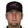
Doug Mientkiewicz RiFS - .348Jeff Bagwell MONT
- .346
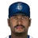
 Randy Winn HYG
Randy Winn HYG
HR
- 13Greg Colbrunn RiFS
- 12
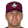
 Richie Sexson ALBQ
Richie Sexson ALBQ - 11
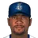
Gary Sheffield HYG - 11

 Bucky Jacobsen VANC
Bucky Jacobsen VANC - 11
 Mark Bellhorn VANC
Mark Bellhorn VANC - 11Alex Ochoa MONT
- 11
 Justin Morneau SARe
Justin Morneau SARe - 11
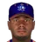
 Ken Griffey Jr. CDT
Ken Griffey Jr. CDT - 10
 Vernon Wells HOBK
Vernon Wells HOBK - 10
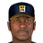
Reggie Sanders HOBK
RBI
- 42Greg Colbrunn RiFS
- 41
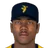
 Garret Anderson SaSa
Garret Anderson SaSa - 40Gary Sheffield HYG
- 40Ken Griffey Jr. CDT
- 38Jeff Bagwell MONT
- 36Bucky Jacobsen VANC
- 32Ryan Klesko LoBa
- 32Lou Merloni MePh
- 32Aubrey Huff SACR
- 32Alex Ochoa MONT
OPS
- 1.207Greg Colbrunn RiFS
- 1.110Aubrey Huff SACR
- 1.105Jeff Bagwell MONT
- 1.097Alex Ochoa MONT
- 1.051Gary Sheffield HYG
- 1.006Randy Winn HYG
- 1.006
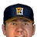
Mike Kinkade HOBK - 1.002Mark Bellhorn VANC
- .988Reggie Sanders HOBK
- .973
 John Olerud EUGL
John Olerud EUGL
SB
- 16Dave Roberts MONT
- 16Ichiro Suzuki ORLJ
- 15
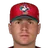
 Ryan Freel SDG
Ryan Freel SDG - 15
 Willie Harris ChKn
Willie Harris ChKn - 13
 Luis Castillo MePh
Luis Castillo MePh - 13
 Jason Tyner MePh
Jason Tyner MePh - 12Eric Owens RiFS
- 12
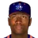
Tom Goodwin CDT - 11
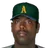
 Rontrez Johnson ALSK
Rontrez Johnson ALSK - 10Randy Winn HYG
ERA
- 1.83
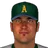
Matt Morris ALSK - 1.96
 Brandon Knight SACR
Brandon Knight SACR - 2.11Jeff Suppan ALSK
- 2.24
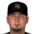
Josh Beckett SARe - 2.24
 Jae-weong Seo EUGL
Jae-weong Seo EUGL - 2.79
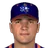
John Burkett CDT - 2.92
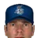
Chuck Finley HYG - 2.98
 Terry Mulholland SACR
Terry Mulholland SACR - 3.26
 Carlos Pulido EUGL
Carlos Pulido EUGL - 3.28
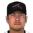
Brian Anderson RiFS
W
- 7Frank Castillo CDT
- 6John Burkett CDT
- 6Jae-weong Seo EUGL
- 6Brandon Knight SACR
- 6Ian Snell ALBQ
- 5Roy Halladay HOBK
- 5Chuck Finley HYG
- 5Josh Beckett SARe
- 5
 Dicky Gonzalez VANC
Dicky Gonzalez VANC - 5Carlos Pulido EUGL
SV
- 13
 Octavio Dotel SACR
Octavio Dotel SACR - 13
 Paul Quantrill LoBa
Paul Quantrill LoBa - 13
 Mike Nakamura HONO
Mike Nakamura HONO - 12Juan Rincon SARe
- 12Francisco Rodriguez MONT
- 11
 Jose Mesa VANC
Jose Mesa VANC - 10
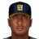
Rafael Soriano HOBK - 10Antonio Osuna RiFS
- 10
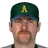
Rod Beck ALSK - 10
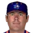
Brendan Donnelly CDT
K
- 75
 Roger Clemens LoBa
Roger Clemens LoBa - 74
 Curt Schilling ChKn
Curt Schilling ChKn - 64Javier Vazquez SDG
- 60
 A.J. Burnett SB66
A.J. Burnett SB66 - 55Josh Beckett SARe
- 54
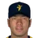
Hideo Nomo SaSa - 52Matt Morris ALSK
- 48Rich Harden HONO
- 48
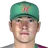
Jesse Foppert HONO - 45
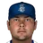
Ryan Vogelsong HYG
WHIP
- 0.99Brian Anderson RiFS
- 1.02Matt Morris ALSK
- 1.02Chuck Finley HYG
- 1.03
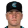
Eric Milton ChKn - 1.10Jae-weong Seo EUGL
- 1.14
 Darren Oliver SACR
Darren Oliver SACR - 1.18Terry Mulholland SACR
- 1.18
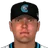
Gil Meche ChKn - 1.19Javier Vazquez SDG
- 1.19
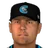
Todd Ritchie ChKn
WAR (hitters)
- 2.3Greg Colbrunn RiFS
- 2.0Andruw Jones LoBa
- 2.0Aubrey Huff SACR
- 1.9Brian Jordan SARe
- 1.9Gary Sheffield HYG
- 1.9Mark DeRosa EUGL
- 1.8Mark Bellhorn VANC
- 1.8Randy Winn HYG
- 1.7Alex Ochoa MONT
- 1.6
 Edgar Martinez VANC
Edgar Martinez VANC
FIP
- 2.87Josh Beckett SARe
- 3.14Victor Santos ALBQ
- 3.25Darren Oliver SACR
- 3.26Rodrigo Lopez SB66
- 3.33Curt Schilling ChKn
- 3.35Roger Clemens LoBa
- 3.36Chuck Finley HYG
- 3.38A.J. Burnett SB66
- 3.40Jae-weong Seo EUGL
- 3.45
 Dan Haren VANC
Dan Haren VANC
WAR (pitchers)
- 2.1Curt Schilling ChKn
- 2.0Josh Beckett SARe
- 1.8Chuck Finley HYG
- 1.7Roger Clemens LoBa
- 1.7A.J. Burnett SB66
- 1.7Matt Morris ALSK
- 1.6Brian Lawrence ORLJ
- 1.6Javier Vazquez SDG
- 1.6Victor Santos ALBQ
- 1.5
 Jamie Moyer VANC
Jamie Moyer VANC
164 qualified, 154 more below the 3.1 PA/G line.
164 qualified, 154 more below the 3.1 PA/G line.
OPS+ = 100 × (OBP / league OBP + SLG / league SLG − 1); ERA+ = 100 × league ERA / ERA. Both use this league's 2002 totals and are not park-adjusted. FIP = (13 HR + 3 (BB + HBP) − 2 K) / IP + the league constant. WAR, WPA and UBR (baserunning runs) are OOTP's own figures.
75 qualified, 183 more below the 1 IP/G line.
75 qualified, 183 more below the 1 IP/G line.
OPS+ = 100 × (OBP / league OBP + SLG / league SLG − 1); ERA+ = 100 × league ERA / ERA. Both use this league's 2002 totals and are not park-adjusted. FIP = (13 HR + 3 (BB + HBP) − 2 K) / IP + the league constant. WAR, WPA and UBR (baserunning runs) are OOTP's own figures.
Team batting
| Team | G | PA | R | R/G | H | 2B | 3B | HR | BB | K | SB | CS | AVG | OBP | SLG | OPS | ISO | BB% | K% |
|---|---|---|---|---|---|---|---|---|---|---|---|---|---|---|---|---|---|---|---|
| Alaska Athletics | 40 | 1514 | 151 | 3.77 | 346 | 55 | 8 | 27 | 125 | 269 | 33 | 17 | .256 | .326 | .368 | .694 | .112 | 8.3% | 17.8% |
| Albuquerque Spirit | 39 | 1543 | 196 | 5.03 | 355 | 72 | 13 | 44 | 173 | 252 | 21 | 13 | .265 | .349 | .437 | .786 | .172 | 11.2% | 16.3% |
| Carolina Disco Turkeys | 39 | 1518 | 201 | 5.15 | 372 | 74 | 6 | 41 | 147 | 216 | 34 | 23 | .276 | .350 | .430 | .780 | .155 | 9.7% | 14.2% |
| Charlotte Knights | 40 | 1545 | 161 | 4.03 | 358 | 65 | 9 | 37 | 125 | 271 | 38 | 13 | .257 | .320 | .396 | .716 | .139 | 8.1% | 17.5% |
| Eugene Larks | 39 | 1494 | 197 | 5.05 | 368 | 75 | 10 | 30 | 130 | 232 | 31 | 15 | .278 | .348 | .418 | .766 | .140 | 8.7% | 15.5% |
| Hartford Yard Goats | 39 | 1566 | 243 | 6.23 | 417 | 96 | 18 | 53 | 131 | 276 | 36 | 13 | .295 | .356 | .501 | .857 | .206 | 8.4% | 17.6% |
| Hoboken Zephyrs | 39 | 1543 | 196 | 5.03 | 403 | 79 | 10 | 62 | 112 | 205 | 24 | 15 | .287 | .344 | .491 | .834 | .203 | 7.3% | 13.3% |
| Honolulu Makani | 40 | 1496 | 144 | 3.60 | 339 | 62 | 6 | 31 | 113 | 264 | 37 | 17 | .250 | .310 | .373 | .682 | .123 | 7.6% | 17.6% |
| Inland Empire 66ers | 40 | 1546 | 165 | 4.12 | 332 | 72 | 8 | 30 | 135 | 254 | 43 | 17 | .242 | .317 | .371 | .688 | .130 | 8.7% | 16.4% |
| Louisville Bats | 39 | 1561 | 215 | 5.51 | 407 | 74 | 11 | 46 | 133 | 227 | 34 | 11 | .291 | .354 | .458 | .812 | .167 | 8.5% | 14.5% |
| Memphis Pharoahs | 40 | 1630 | 220 | 5.50 | 415 | 91 | 11 | 38 | 135 | 273 | 49 | 11 | .284 | .347 | .440 | .787 | .156 | 8.3% | 16.7% |
| Monterrey Sultanes | 38 | 1551 | 226 | 5.95 | 408 | 83 | 16 | 45 | 159 | 196 | 52 | 14 | .300 | .377 | .483 | .860 | .184 | 10.3% | 12.6% |
 Oklahoma City Twisters Oklahoma City Twisters | 40 | 1563 | 193 | 4.83 | 389 | 90 | 5 | 34 | 126 | 232 | 31 | 18 | .277 | .341 | .421 | .762 | .144 | 8.1% | 14.8% |
| Orlando Juicers | 40 | 1488 | 174 | 4.35 | 368 | 78 | 7 | 39 | 106 | 238 | 37 | 10 | .270 | .324 | .424 | .748 | .153 | 7.1% | 16.0% |
| Richmond Flying Squirrels | 40 | 1539 | 192 | 4.80 | 393 | 91 | 4 | 45 | 118 | 234 | 44 | 17 | .280 | .335 | .446 | .781 | .166 | 7.7% | 15.2% |
| Sacramento Solons | 40 | 1581 | 216 | 5.40 | 418 | 89 | 7 | 45 | 120 | 225 | 30 | 14 | .293 | .350 | .460 | .810 | .167 | 7.6% | 14.2% |
| San Antonio Rebeldes | 40 | 1529 | 160 | 4.00 | 369 | 65 | 7 | 43 | 98 | 276 | 41 | 13 | .264 | .315 | .413 | .727 | .149 | 6.4% | 18.1% |
| Santo Domingo Gallos | 40 | 1585 | 208 | 5.20 | 385 | 78 | 9 | 32 | 151 | 268 | 38 | 7 | .274 | .348 | .411 | .759 | .137 | 9.5% | 16.9% |
| Savannah Bananas | 40 | 1615 | 224 | 5.60 | 420 | 86 | 11 | 50 | 135 | 260 | 29 | 8 | .289 | .353 | .467 | .820 | .178 | 8.4% | 16.1% |
| Vancouver Mounties | 40 | 1558 | 218 | 5.45 | 399 | 81 | 7 | 45 | 147 | 254 | 27 | 13 | .289 | .357 | .456 | .813 | .167 | 9.4% | 16.3% |
Team pitching
| Team | W | L | ERA | FIP | SP ERA | RP ERA | IP | H | R | ER | HR | BB | K | WHIP | K/9 | BB/9 | HR/9 | Opp AVG | BABIP | GB% | QS | SV | BS |
|---|---|---|---|---|---|---|---|---|---|---|---|---|---|---|---|---|---|---|---|---|---|---|---|
| Alaska Athletics | 20 | 20 | 3.77 | 4.47 | 3.24 | 5.23 | 351.1 | 353 | 155 | 147 | 36 | 130 | 233 | 1.37 | 6.0 | 3.3 | 0.92 | .260 | .287 | 47.9% | 19 | 18 | 8 |
| Albuquerque Spirit | 20 | 19 | 4.79 | 4.84 | 5.35 | 3.88 | 346.0 | 385 | 201 | 184 | 47 | 121 | 240 | 1.46 | 6.2 | 3.1 | 1.22 | .281 | .309 | 47.8% | 14 | 12 | 4 |
| Carolina Disco Turkeys | 19 | 20 | 4.63 | 4.89 | 4.70 | 4.49 | 342.1 | 361 | 195 | 176 | 43 | 134 | 223 | 1.45 | 5.9 | 3.5 | 1.13 | .269 | .294 | 49.3% | 16 | 10 | 0 |
| Charlotte Knights | 13 | 27 | 4.71 | 4.35 | 4.33 | 5.73 | 357.1 | 390 | 195 | 187 | 50 | 93 | 292 | 1.35 | 7.4 | 2.3 | 1.26 | .274 | .312 | 48.3% | 20 | 7 | 3 |
| Eugene Larks | 21 | 18 | 4.02 | 4.49 | 4.00 | 4.06 | 338.1 | 358 | 164 | 151 | 34 | 124 | 215 | 1.42 | 5.7 | 3.3 | 0.90 | .268 | .296 | 49.2% | 17 | 12 | 2 |
| Hartford Yard Goats | 22 | 17 | 5.12 | 4.81 | 4.98 | 5.45 | 344.2 | 395 | 221 | 196 | 43 | 136 | 246 | 1.54 | 6.4 | 3.6 | 1.12 | .282 | .315 | 47.8% | 18 | 13 | 8 |
| Hoboken Zephyrs | 18 | 21 | 4.79 | 4.74 | 4.51 | 5.34 | 347.2 | 391 | 200 | 185 | 41 | 112 | 207 | 1.45 | 5.4 | 2.9 | 1.06 | .285 | .308 | 50.7% | 19 | 13 | 3 |
| Honolulu Makani | 18 | 22 | 3.89 | 4.76 | 4.00 | 3.63 | 351.1 | 353 | 167 | 152 | 48 | 118 | 248 | 1.34 | 6.4 | 3.0 | 1.23 | .259 | .284 | 50.5% | 18 | 16 | 2 |
| Inland Empire 66ers | 16 | 24 | 4.45 | 4.10 | 4.45 | 4.44 | 362.0 | 406 | 186 | 179 | 38 | 110 | 284 | 1.43 | 7.1 | 2.7 | 0.94 | .283 | .327 | 52.1% | 17 | 12 | 5 |
| Louisville Bats | 24 | 15 | 4.62 | 4.32 | 4.96 | 3.89 | 349.0 | 363 | 206 | 179 | 32 | 139 | 263 | 1.44 | 6.8 | 3.6 | 0.83 | .264 | .303 | 49.3% | 21 | 16 | 7 |
| Memphis Pharoahs | 19 | 21 | 4.70 | 4.78 | 4.67 | 4.75 | 362.0 | 423 | 210 | 189 | 33 | 186 | 245 | 1.68 | 6.1 | 4.6 | 0.82 | .291 | .327 | 46.7% | 12 | 10 | 8 |
| Monterrey Sultanes | 25 | 13 | 4.39 | 4.22 | 5.56 | 2.51 | 338.1 | 354 | 175 | 165 | 33 | 116 | 249 | 1.39 | 6.6 | 3.1 | 0.88 | .268 | .306 | 47.7% | 15 | 13 | 3 |
| Oklahoma City Twisters | 18 | 22 | 5.41 | 5.02 | 6.17 | 4.35 | 358.0 | 419 | 229 | 215 | 47 | 164 | 265 | 1.63 | 6.7 | 4.1 | 1.18 | .292 | .327 | 50.6% | 12 | 15 | 2 |
| Orlando Juicers | 16 | 24 | 5.15 | 4.94 | 4.91 | 5.66 | 340.2 | 391 | 206 | 195 | 44 | 122 | 206 | 1.51 | 5.4 | 3.2 | 1.16 | .285 | .306 | 48.6% | 19 | 11 | 5 |
| Richmond Flying Squirrels | 19 | 21 | 4.82 | 4.52 | 5.15 | 4.14 | 349.0 | 391 | 208 | 187 | 37 | 107 | 211 | 1.43 | 5.4 | 2.8 | 0.95 | .280 | .306 | 48.8% | 19 | 11 | 7 |
| Sacramento Solons | 25 | 15 | 3.94 | 4.32 | 3.46 | 4.94 | 358.1 | 371 | 168 | 157 | 33 | 128 | 236 | 1.39 | 5.9 | 3.2 | 0.83 | .265 | .297 | 46.3% | 21 | 17 | 5 |
| San Antonio Rebeldes | 17 | 23 | 4.69 | 4.53 | 4.54 | 4.95 | 358.2 | 417 | 201 | 187 | 43 | 143 | 287 | 1.56 | 7.2 | 3.6 | 1.08 | .288 | .332 | 47.5% | 16 | 13 | 4 |
| Santo Domingo Gallos | 21 | 19 | 5.05 | 5.01 | 5.45 | 4.29 | 351.1 | 378 | 207 | 197 | 52 | 146 | 272 | 1.49 | 7.0 | 3.7 | 1.33 | .276 | .308 | 46.7% | 10 | 11 | 4 |
| Savannah Bananas | 22 | 18 | 5.16 | 5.18 | 5.24 | 5.02 | 354.0 | 391 | 219 | 203 | 50 | 168 | 264 | 1.58 | 6.7 | 4.3 | 1.27 | .278 | .310 | 46.9% | 17 | 14 | 5 |
| Vancouver Mounties | 23 | 17 | 4.54 | 4.35 | 5.01 | 3.68 | 349.0 | 371 | 187 | 176 | 33 | 122 | 236 | 1.41 | 6.1 | 3.1 | 0.85 | .268 | .301 | 50.5% | 15 | 15 | 2 |
Team fielding
| Team | G | TC | PO | A | E | DP | FPct | SB att | CS | CS% | PB |
|---|---|---|---|---|---|---|---|---|---|---|---|
| Alaska Athletics | 40 | 1470 | 1054 | 394 | 22 | 32 | .985 | 57 | 13 | 22.8% | 2 |
| Albuquerque Spirit | 39 | 1432 | 1038 | 374 | 20 | 32 | .986 | 44 | 9 | 20.5% | 5 |
| Carolina Disco Turkeys | 39 | 1458 | 1027 | 399 | 32 | 28 | .978 | 47 | 17 | 36.2% | 2 |
| Charlotte Knights | 40 | 1441 | 1072 | 350 | 19 | 22 | .987 | 39 | 8 | 20.5% | 6 |
| Eugene Larks | 39 | 1426 | 1015 | 382 | 29 | 30 | .980 | 33 | 6 | 18.2% | 3 |
| Hartford Yard Goats | 39 | 1438 | 1034 | 371 | 33 | 24 | .977 | 46 | 16 | 34.8% | 2 |
| Hoboken Zephyrs | 39 | 1483 | 1043 | 417 | 23 | 26 | .984 | 66 | 17 | 25.8% | 3 |
| Honolulu Makani | 40 | 1486 | 1054 | 407 | 25 | 26 | .983 | 54 | 15 | 27.8% | 2 |
| Inland Empire 66ers | 40 | 1522 | 1086 | 418 | 18 | 22 | .988 | 55 | 10 | 18.2% | 4 |
| Louisville Bats | 39 | 1450 | 1047 | 380 | 23 | 15 | .984 | 48 | 11 | 22.9% | 9 |
| Memphis Pharoahs | 40 | 1500 | 1086 | 392 | 22 | 21 | .985 | 42 | 17 | 40.5% | 7 |
| Monterrey Sultanes | 38 | 1405 | 1015 | 371 | 19 | 22 | .986 | 34 | 9 | 26.5% | 4 |
| Oklahoma City Twisters | 40 | 1498 | 1074 | 400 | 24 | 23 | .984 | 65 | 26 | 40.0% | 2 |
| Orlando Juicers | 40 | 1429 | 1022 | 388 | 19 | 20 | .987 | 56 | 17 | 30.4% | 1 |
| Richmond Flying Squirrels | 40 | 1474 | 1047 | 403 | 24 | 19 | .984 | 53 | 15 | 28.3% | 3 |
| Sacramento Solons | 40 | 1491 | 1075 | 392 | 24 | 25 | .984 | 43 | 19 | 44.2% | 3 |
| San Antonio Rebeldes | 40 | 1474 | 1076 | 371 | 27 | 31 | .982 | 42 | 12 | 28.6% | 4 |
| Santo Domingo Gallos | 40 | 1446 | 1054 | 372 | 20 | 28 | .986 | 55 | 14 | 25.5% | 3 |
| Savannah Bananas | 40 | 1453 | 1062 | 368 | 23 | 27 | .984 | 56 | 21 | 37.5% | 4 |
| Vancouver Mounties | 40 | 1465 | 1047 | 396 | 22 | 31 | .985 | 53 | 7 | 13.2% | 2 |
Team totals come from OOTP's team stat tables. FIP uses this league's 2002 constant (league FIP equals league ERA). SP/RP ERA split the staff into starters and bullpen. GB% is ground balls over ground plus fly balls as OOTP records them.
Fewest errors (qualified fielders)
- 0
 Adrian Gonzalez MePh
Adrian Gonzalez MePh - 0
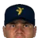
Jorge Cantu SaSa - 0
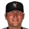
Mark Ellis SB66 - 0
 Aaron Rowand MePh
Aaron Rowand MePh - 0
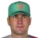
Tim Salmon HONO - 0Danny Bautista OKC
- 0
 Ryan Ludwick ORLJ
Ryan Ludwick ORLJ - 0
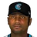
Craig Monroe ChKn
Best fielding % (non-pitchers)
- 1.000Adrian Gonzalez MePh
- 1.000Jorge Cantu SaSa
- 1.000Mark Ellis SB66
- 1.000Aaron Rowand MePh
- 1.000Tim Salmon HONO
- 1.000Danny Bautista OKC
- 1.000Ryan Ludwick ORLJ
- 1.000Craig Monroe ChKn
Catcher caught-stealing %
- 46.2%
 Benito Santiago SACR
Benito Santiago SACR - 44.1%Paul Lo Duca OKC
- 39.4%
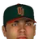
Johnny Estrada ORLJ - 37.1%
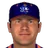
Mike Lieberthal CDT - 36.4%Darrin Fletcher SARe
- 33.3%Chad Moeller SaSa
- 32.3%
 Ramon Hernandez MePh
Ramon Hernandez MePh - 31.8%David Ross MONT
Catcher framing runs
- 1.9Chad Moeller SaSa
- 1.9
 Mike Redmond VANC
Mike Redmond VANC - 1.9
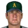
Todd Pratt ALSK - 1.4Mike Kinkade HOBK
- 1.2Charles Johnson HONO
- 0.9Greg Colbrunn RiFS
- 0.5Benito Santiago SACR
- 0.5Paul Lo Duca OKC
Outfield arm runs
- 5.7Ryan Ludwick ORLJ
- 5.6Jason Tyner MePh
- 5.6
 Brady Anderson EUGL
Brady Anderson EUGL - 5.4
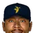
Damian Rolls SaSa - 5.0Lou Collier HONO
- 4.7
 Bubba Crosby VANC
Bubba Crosby VANC - 3.6Danny Bautista OKC
- 3.3Ryan Jackson SaSa
Double plays, 2B/SS
- 23
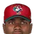
Orlando Hudson SDG - 22Chris Woodward HONO
- 22Wilton Guerrero SARe
- 22
 Jeff Reboulet VANC
Jeff Reboulet VANC - 21
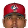
Jose Nieves SDG - 21Mark DeRosa EUGL
- 21
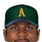
Junior Spivey ALSK - 19Orlando Cabrera CDT
Zone rating, C
- 2.0Mike Lieberthal CDT
- 1.8
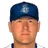
Greg Myers HYG - 1.7Charles Johnson HONO
- 1.5Paul Lo Duca OKC
- 1.5Benito Santiago SACR
- 1.4Darrin Fletcher SARe
- 1.0Chad Moeller SaSa
- 0.8Mike Kinkade HOBK
Zone rating, 1B
- 2.6Richie Sexson ALBQ
- 2.1Adrian Gonzalez MePh
- 1.6John Olerud EUGL
- 1.2Jorge Cantu SaSa
- 0.7Sean Casey ORLJ
- 0.6
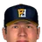
Rusty Greer HOBK - 0.5Jeremy Giambi SB66
- 0.1
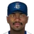
Ray Durham HYG
Zone rating, 2B
- 5.7Chris Woodward HONO
- 4.1Orlando Hudson SDG
- 3.2Damian Jackson OKC
- 3.1Mark Ellis SB66
- 3.1Junior Spivey ALSK
- 2.9Mark DeRosa EUGL
- 1.3
 David Eckstein LoBa
David Eckstein LoBa - 1.3Jeff Reboulet VANC
Zone rating, SS
- 6.5
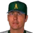
Mike Benjamin ALSK - 3.2Pablo Sanchez CDT
- 2.1Travis Fryman ChKn
- 1.7
 Barry Larkin LoBa
Barry Larkin LoBa - 0.2Michael Barrett RiFS
- 0.2
 Ramon Vazquez EUGL
Ramon Vazquez EUGL - 0.1
 Royce Clayton SACR
Royce Clayton SACR - -0.4Julio Lugo SARe
Zone rating, 3B
- 2.7
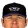
Herb Perry LoBa - 2.4
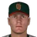
Matt Williams ORLJ - 2.1
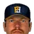
Tom Wilson HOBK - 1.5
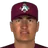
Chris Donnels ALBQ - 1.3Vinny Castilla MONT
- 1.0Edgardo Alfonzo ChKn
- 0.6Mike Lowell RiFS
- 0.5
 Ron Coomer EUGL
Ron Coomer EUGL
Zone rating, LF
- 3.3Danny Bautista OKC
- 3.1
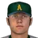
Mark Little ALSK - 2.6
 Todd Hollandsworth VANC
Todd Hollandsworth VANC - 2.5
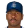
Ellis Burks HYG - 2.0
 Tsuyoshi Shinjo EUGL
Tsuyoshi Shinjo EUGL - 1.7
 David Dellucci SACR
David Dellucci SACR - 1.5Mark Whiten ChKn
- 1.3David Justice ALBQ
Zone rating, CF
- 7.2Andruw Jones LoBa
- 6.5Brian Jordan SARe
- 5.9Brian Hunter SDG
- 3.4Willie Harris ChKn
- 2.5Randy Winn HYG
- 1.0Tom Goodwin CDT
- 0.9
 Kenny Lofton SACR
Kenny Lofton SACR - 0.4Vernon Wells HOBK
Zone rating, RF
- 6.8Ichiro Suzuki ORLJ
- 5.1
 Hiram Bocachica SACR
Hiram Bocachica SACR - 4.7Aaron Rowand MePh
- 2.8
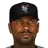
Carl Everett SB66 - 2.5
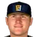
Chris Magruder HOBK - 2.3
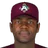
Quinton McCracken ALBQ - 2.2Ken Griffey Jr. CDT
- 0.9Tim Salmon HONO
| Player | Team | Pos | G | GS | Inn | TC | PO | A | E | DP | Fld% | RF/9 | ZR | Arm | Framing | SB | CS | CS% | PB |
|---|---|---|---|---|---|---|---|---|---|---|---|---|---|---|---|---|---|---|---|
| Justin Morneau | SARe | 1B | 39 | 39 | 345.2 | 329 | 305 | 19 | 5 | 29 | .985 | 8.44 | -3.6 | - | - | - | - | - | - |
| Ryan Klesko | LoBa | 1B | 38 | 38 | 340.0 | 344 | 323 | 20 | 1 | 13 | .997 | 9.08 | -0.8 | - | - | - | - | - | - |
| Adrian Gonzalez | MePh | 1B | 38 | 38 | 337.0 | 328 | 310 | 18 | 0 | 15 | 1.000 | 8.76 | 2.1 | - | - | - | - | - | - |
| Carl Everett | SB66 | RF | 37 | 37 | 335.1 | 81 | 69 | 9 | 3 | 0 | .963 | 2.09 | 2.8 | 2.7 | - | - | - | - | - |
| Jorge Cantu | SaSa | 1B | 38 | 38 | 335.0 | 313 | 294 | 19 | 0 | 21 | 1.000 | 8.41 | 1.2 | - | - | - | - | - | - |
| Luis Castillo | MePh | 2B | 37 | 37 | 334.0 | 191 | 87 | 103 | 1 | 15 | .995 | 5.12 | -1.7 | - | - | - | - | - | - |
| Bobby Crosby | OKC | SS | 37 | 37 | 332.0 | 190 | 74 | 111 | 5 | 18 | .974 | 5.02 | -2.2 | - | - | - | - | - | - |
| Mark Ellis | SB66 | 2B | 37 | 36 | 331.0 | 188 | 84 | 104 | 0 | 13 | 1.000 | 5.11 | 3.1 | - | - | - | - | - | - |
| John Olerud | EUGL | 1B | 39 | 39 | 330.1 | 354 | 327 | 24 | 3 | 30 | .992 | 9.56 | 1.6 | - | - | - | - | - | - |
| Aaron Rowand | MePh | RF | 38 | 38 | 327.2 | 105 | 98 | 7 | 0 | 0 | 1.000 | 2.88 | 4.7 | 1.1 | - | - | - | - | - |
| Orlando Hudson | SDG | 2B | 38 | 37 | 327.1 | 183 | 78 | 101 | 4 | 23 | .978 | 4.92 | 4.1 | - | - | - | - | - | - |
| Pete Zoccolillo | SARe | 3B | 37 | 37 | 325.2 | 98 | 25 | 66 | 7 | 8 | .929 | 2.51 | -2.3 | - | - | - | - | - | - |
| Chris Woodward | HONO | 2B | 37 | 37 | 325.1 | 187 | 63 | 121 | 3 | 22 | .984 | 5.09 | 5.7 | - | - | - | - | - | - |
| Trot Nixon | SDG | LF | 37 | 37 | 325.1 | 74 | 69 | 4 | 1 | 0 | .986 | 2.02 | -1.3 | -0.3 | - | - | - | - | - |
| Brian Jordan | SARe | CF | 38 | 36 | 324.2 | 127 | 117 | 8 | 2 | 0 | .984 | 3.47 | 6.5 | 0.7 | - | - | - | - | - |
| Tim Salmon | HONO | RF | 37 | 37 | 323.2 | 81 | 73 | 8 | 0 | 2 | 1.000 | 2.25 | 0.9 | 1.9 | - | - | - | - | - |
| Royce Clayton | SACR | SS | 37 | 36 | 323.1 | 174 | 57 | 112 | 5 | 14 | .971 | 4.70 | 0.1 | - | - | - | - | - | - |
| Barry Larkin | LoBa | SS | 36 | 36 | 323.0 | 168 | 56 | 105 | 7 | 10 | .958 | 4.49 | 1.7 | - | - | - | - | - | - |
| Mark Little | ALSK | LF | 38 | 37 | 322.2 | 83 | 77 | 5 | 1 | 0 | .988 | 2.29 | 3.1 | 0.3 | - | - | - | - | - |
| Andruw Jones | LoBa | CF | 36 | 36 | 322.0 | 125 | 120 | 4 | 1 | 0 | .992 | 3.47 | 7.2 | 0.2 | - | - | - | - | - |
| Bubba Crosby | VANC | CF | 37 | 37 | 322.0 | 111 | 110 | 0 | 1 | 0 | .991 | 3.07 | -5.2 | 4.7 | - | - | - | - | - |
| Kevin Orie | SDG | 3B | 38 | 37 | 321.1 | 82 | 25 | 54 | 3 | 4 | .963 | 2.21 | -0.4 | - | - | - | - | - | - |
| Damian Jackson | OKC | 2B | 36 | 36 | 321.0 | 196 | 90 | 98 | 8 | 14 | .959 | 5.27 | 3.2 | - | - | - | - | - | - |
| Bill Mueller | SaSa | 3B | 39 | 37 | 321.0 | 85 | 26 | 55 | 4 | 7 | .953 | 2.27 | -0.8 | - | - | - | - | - | - |
| Gary Sheffield | HYG | SS | 37 | 36 | 319.2 | 181 | 53 | 120 | 8 | 17 | .956 | 4.87 | -3.0 | - | - | - | - | - | - |
| Brian Hunter | SDG | CF | 37 | 37 | 319.1 | 119 | 111 | 5 | 3 | 1 | .975 | 3.27 | 5.9 | 1.5 | - | - | - | - | - |
| Garret Anderson | SaSa | LF | 37 | 37 | 319.0 | 74 | 71 | 2 | 1 | 0 | .986 | 2.06 | -2.9 | -1.6 | - | - | - | - | - |
| Todd Hollandsworth | VANC | LF | 37 | 37 | 318.0 | 77 | 73 | 2 | 2 | 0 | .974 | 2.12 | 2.6 | -0.3 | - | - | - | - | - |
| Danny Bautista | OKC | LF | 38 | 37 | 318.0 | 69 | 67 | 2 | 0 | 0 | 1.000 | 1.95 | 3.3 | 3.6 | - | - | - | - | - |
| Mike Moriarty | ChKn | 2B | 37 | 36 | 317.2 | 165 | 72 | 89 | 4 | 18 | .976 | 4.56 | -3.4 | - | - | - | - | - | - |
| Pablo Sanchez | CDT | SS | 37 | 37 | 317.0 | 169 | 61 | 103 | 5 | 16 | .970 | 4.66 | 3.2 | - | - | - | - | - | - |
| Michael Barrett | RiFS | SS | 37 | 37 | 317.0 | 164 | 48 | 111 | 5 | 10 | .970 | 4.51 | 0.2 | - | - | - | - | - | - |
| Geoff Jenkins | MePh | LF | 35 | 35 | 316.0 | 72 | 68 | 2 | 2 | 0 | .972 | 1.99 | -1.0 | 0.3 | - | - | - | - | - |
| Ryan Ludwick | ORLJ | CF | 38 | 37 | 315.2 | 101 | 100 | 1 | 0 | 0 | 1.000 | 2.88 | -1.9 | 5.7 | - | - | - | - | - |
| Damian Rolls | SaSa | CF | 37 | 37 | 315.0 | 103 | 99 | 1 | 3 | 1 | .971 | 2.86 | -3.0 | 5.4 | - | - | - | - | - |
| Kenny Lofton | SACR | CF | 36 | 35 | 314.1 | 115 | 106 | 5 | 4 | 0 | .965 | 3.18 | 0.9 | 0.7 | - | - | - | - | - |
| B.J. Surhoff | HONO | 1B | 36 | 36 | 314.1 | 332 | 309 | 22 | 1 | 21 | .997 | 9.48 | -1.8 | - | - | - | - | - | - |
| Sean Casey | ORLJ | 1B | 39 | 39 | 313.2 | 343 | 318 | 24 | 1 | 20 | .997 | 9.81 | 0.7 | - | - | - | - | - | - |
| Craig Monroe | ChKn | RF | 36 | 35 | 313.1 | 65 | 65 | 0 | 0 | 0 | 1.000 | 1.87 | -6.8 | 2.9 | - | - | - | - | - |
| Hiram Bocachica | SACR | RF | 35 | 35 | 312.1 | 90 | 89 | 1 | 0 | 0 | 1.000 | 2.59 | 5.1 | -0.6 | - | - | - | - | - |
| Mark Whiten | ChKn | LF | 35 | 35 | 312.1 | 65 | 63 | 1 | 1 | 0 | .985 | 1.84 | 1.5 | 1.7 | - | - | - | - | - |
| Chad Tracy | CDT | 3B | 37 | 37 | 312.0 | 92 | 21 | 66 | 5 | 7 | .946 | 2.51 | 0.5 | - | - | - | - | - | - |
| Greg Norton | MePh | 3B | 35 | 34 | 311.0 | 95 | 27 | 61 | 7 | 3 | .926 | 2.55 | -0.8 | - | - | - | - | - | - |
| Ichiro Suzuki | ORLJ | RF | 37 | 37 | 310.2 | 95 | 92 | 2 | 1 | 0 | .989 | 2.72 | 6.8 | -1.1 | - | - | - | - | - |
| Ryan Jackson | SaSa | RF | 36 | 36 | 309.0 | 70 | 67 | 1 | 2 | 0 | .971 | 1.98 | -0.1 | 3.3 | - | - | - | - | - |
| Herb Perry | LoBa | 3B | 35 | 35 | 309.0 | 97 | 21 | 76 | 0 | 2 | 1.000 | 2.83 | 2.7 | - | - | - | - | - | - |
| Mark McLemore | ALBQ | 2B | 35 | 35 | 308.2 | 163 | 73 | 86 | 4 | 17 | .975 | 4.64 | -2.2 | - | - | - | - | - | - |
| Vinny Castilla | MONT | 3B | 37 | 36 | 308.1 | 90 | 21 | 68 | 1 | 6 | .989 | 2.60 | 1.3 | - | - | - | - | - | - |
| Edgardo Alfonzo | ChKn | 3B | 34 | 34 | 305.1 | 81 | 19 | 60 | 2 | 4 | .975 | 2.33 | 1.0 | - | - | - | - | - | - |
| Scott Seabol | SaSa | SS | 36 | 36 | 305.0 | 175 | 61 | 106 | 8 | 15 | .954 | 4.93 | -1.4 | - | - | - | - | - | - |
| Chris Donnels | ALBQ | 3B | 35 | 35 | 305.0 | 92 | 28 | 63 | 1 | 6 | .989 | 2.69 | 1.5 | - | - | - | - | - | - |
| Bret Boone | RiFS | 2B | 36 | 36 | 305.0 | 155 | 64 | 89 | 2 | 12 | .987 | 4.51 | -2.7 | - | - | - | - | - | - |
| Jose Nieves | SDG | SS | 35 | 35 | 304.1 | 154 | 60 | 91 | 3 | 21 | .981 | 4.47 | -1.1 | - | - | - | - | - | - |
| Ken Griffey Jr. | CDT | RF | 36 | 35 | 304.0 | 76 | 70 | 3 | 3 | 0 | .961 | 2.16 | 2.2 | 0.9 | - | - | - | - | - |
| Randy Winn | HYG | CF | 35 | 34 | 303.2 | 113 | 109 | 3 | 1 | 0 | .991 | 3.32 | 2.5 | -1.8 | - | - | - | - | - |
| Timo Perez | SB66 | LF | 34 | 34 | 302.1 | 63 | 58 | 4 | 1 | 0 | .984 | 1.85 | -3.9 | 0.5 | - | - | - | - | - |
| Tom Goodwin | CDT | CF | 36 | 35 | 302.0 | 115 | 107 | 7 | 1 | 2 | .991 | 3.40 | 1.0 | 1.4 | - | - | - | - | - |
| Santiago Perez | HYG | 3B | 34 | 34 | 301.2 | 84 | 25 | 49 | 10 | 3 | .881 | 2.21 | -4.6 | - | - | - | - | - | - |
| Jeff Bagwell | MONT | 1B | 37 | 37 | 301.1 | 309 | 286 | 21 | 2 | 20 | .994 | 9.17 | -1.1 | - | - | - | - | - | - |
| Brady Anderson | EUGL | CF | 35 | 35 | 301.0 | 96 | 96 | 0 | 0 | 0 | 1.000 | 2.87 | -2.9 | 5.6 | - | - | - | - | - |
| Tony Tarasco | HONO | LF | 34 | 34 | 298.2 | 66 | 61 | 3 | 2 | 1 | .970 | 1.93 | -1.3 | 0.4 | - | - | - | - | - |
| Matt Williams | ORLJ | 3B | 37 | 36 | 298.2 | 109 | 34 | 72 | 3 | 2 | .972 | 3.19 | 2.4 | - | - | - | - | - | - |
| Jay Bell | MONT | SS | 35 | 35 | 298.0 | 168 | 53 | 107 | 8 | 14 | .952 | 4.83 | -2.2 | - | - | - | - | - | - |
| Ron Coomer | EUGL | 3B | 34 | 34 | 297.1 | 97 | 32 | 61 | 4 | 5 | .959 | 2.82 | 0.5 | - | - | - | - | - | - |
| Orlando Cabrera | CDT | 2B | 36 | 35 | 297.0 | 202 | 77 | 120 | 5 | 19 | .975 | 5.97 | 0.2 | - | - | - | - | - | - |
| Travis Fryman | ChKn | SS | 33 | 33 | 294.2 | 142 | 46 | 96 | 0 | 13 | 1.000 | 4.34 | 2.1 | - | - | - | - | - | - |
| David Eckstein | LoBa | 2B | 33 | 33 | 294.0 | 170 | 72 | 94 | 4 | 10 | .976 | 5.08 | 1.3 | - | - | - | - | - | - |
| Lou Merloni | MePh | SS | 33 | 33 | 294.0 | 154 | 57 | 93 | 4 | 11 | .974 | 4.59 | -2.4 | - | - | - | - | - | - |
| Morgan Burkhart | SDG | 1B | 35 | 34 | 293.1 | 284 | 253 | 31 | 0 | 21 | 1.000 | 8.71 | -1.5 | - | - | - | - | - | - |
| Terrence Long | CDT | LF | 34 | 34 | 293.0 | 68 | 61 | 2 | 5 | 0 | .926 | 1.94 | 0.9 | -1.0 | - | - | - | - | - |
| Quinton McCracken | ALBQ | RF | 33 | 33 | 292.1 | 85 | 75 | 5 | 5 | 2 | .941 | 2.46 | 2.3 | 1.0 | - | - | - | - | - |
| Robert Machado | SB66 | C | 32 | 32 | 291.1 | 264 | 249 | 15 | 0 | 1 | 1.000 | 8.16 | -2.1 | - | 0.3 | 36 | 6 | 14.3 | 3 |
| Jason Tyner | MePh | CF | 34 | 33 | 291.0 | 82 | 80 | 2 | 0 | 0 | 1.000 | 2.54 | -2.6 | 5.6 | - | - | - | - | - |
| McKay Christensen | SB66 | CF | 36 | 32 | 291.0 | 91 | 87 | 0 | 4 | 0 | .956 | 2.69 | -4.0 | 3.1 | - | - | - | - | - |
| David Justice | ALBQ | LF | 33 | 33 | 291.0 | 60 | 57 | 3 | 0 | 0 | 1.000 | 1.86 | 1.3 | 0.3 | - | - | - | - | - |
| Lyle Overbay | CDT | 1B | 34 | 34 | 290.2 | 291 | 263 | 22 | 6 | 21 | .979 | 8.82 | -3.3 | - | - | - | - | - | - |
| Mark DeRosa | EUGL | 2B | 34 | 34 | 289.1 | 176 | 76 | 95 | 5 | 21 | .972 | 5.32 | 2.9 | - | - | - | - | - | - |
| Ramon Hernandez | MePh | C | 32 | 32 | 289.1 | 230 | 202 | 26 | 2 | 1 | .991 | 7.09 | -0.0 | - | -1.9 | 21 | 10 | 32.3 | 7 |
| Jeremy Giambi | SB66 | 1B | 36 | 36 | 288.1 | 303 | 282 | 21 | 0 | 18 | 1.000 | 9.46 | 0.5 | - | - | - | - | - | - |
| Mike Kinkade | HOBK | C | 32 | 32 | 285.2 | 192 | 162 | 30 | 0 | 0 | 1.000 | 6.05 | 0.8 | - | 1.4 | 37 | 16 | 30.2 | 3 |
| Ronnie Belliard | HYG | 2B | 33 | 33 | 284.2 | 157 | 68 | 87 | 2 | 16 | .987 | 4.90 | -2.2 | - | - | - | - | - | - |
| Victor Martinez | SDG | C | 33 | 32 | 283.0 | 253 | 230 | 21 | 2 | 1 | .992 | 7.98 | 0.0 | - | -2.3 | 29 | 12 | 29.3 | 3 |
| Charles Johnson | HONO | C | 32 | 32 | 282.1 | 233 | 210 | 22 | 1 | 2 | .996 | 7.40 | 1.7 | - | 1.2 | 29 | 13 | 31.0 | 2 |
| Augie Ojeda | MONT | 2B | 33 | 32 | 282.1 | 135 | 58 | 74 | 3 | 13 | .978 | 4.21 | -1.4 | - | - | - | - | - | - |
| Chad Moeller | SaSa | C | 32 | 32 | 281.0 | 241 | 222 | 19 | 0 | 2 | 1.000 | 7.72 | 1.0 | - | 1.9 | 30 | 15 | 33.3 | 3 |
| Wilton Guerrero | SARe | 2B | 33 | 31 | 280.2 | 152 | 69 | 83 | 0 | 22 | 1.000 | 4.87 | -3.7 | - | - | - | - | - | - |
| Eddie Perez | ChKn | C | 32 | 31 | 280.1 | 251 | 232 | 19 | 0 | 1 | 1.000 | 8.06 | 0.0 | - | 0.4 | 22 | 7 | 24.1 | 3 |
| Richie Sexson | ALBQ | 1B | 32 | 32 | 280.0 | 285 | 252 | 32 | 1 | 23 | .996 | 9.13 | 2.6 | - | - | - | - | - | - |
| Tsuyoshi Shinjo | EUGL | LF | 33 | 33 | 279.0 | 82 | 73 | 7 | 2 | 1 | .976 | 2.58 | 2.0 | 0.8 | - | - | - | - | - |
| Doug Mirabelli | LoBa | C | 31 | 31 | 278.0 | 239 | 217 | 22 | 0 | 0 | 1.000 | 7.74 | -2.1 | - | -1.1 | 32 | 9 | 22.0 | 7 |
| Craig Wilson | EUGL | C | 32 | 32 | 277.1 | 200 | 182 | 17 | 1 | 0 | .995 | 6.46 | -0.5 | - | 0.4 | 23 | 5 | 17.9 | 2 |
| Mike Redmond | VANC | C | 32 | 32 | 277.0 | 213 | 198 | 14 | 1 | 2 | .995 | 6.89 | -0.5 | - | 1.9 | 39 | 6 | 13.3 | 1 |
| Jose Vidro | SaSa | 2B | 33 | 32 | 276.0 | 159 | 72 | 85 | 2 | 19 | .987 | 5.12 | -3.2 | - | - | - | - | - | - |
| Darrin Fletcher | SARe | C | 31 | 31 | 275.2 | 250 | 225 | 25 | 0 | 0 | 1.000 | 8.16 | 1.4 | - | 0.1 | 21 | 12 | 36.4 | 3 |
| Greg Colbrunn | RiFS | C | 31 | 31 | 275.0 | 217 | 189 | 24 | 4 | 2 | .982 | 6.97 | -0.6 | - | 0.9 | 33 | 9 | 21.4 | 3 |
| Mike Lowell | RiFS | 3B | 33 | 32 | 275.0 | 89 | 22 | 65 | 2 | 7 | .978 | 2.85 | 0.6 | - | - | - | - | - | - |
| Mike Lieberthal | CDT | C | 33 | 32 | 274.2 | 220 | 197 | 22 | 1 | 3 | .995 | 7.18 | 2.0 | - | 0.1 | 22 | 13 | 37.1 | 2 |
| Lou Collier | HONO | CF | 31 | 31 | 273.1 | 97 | 95 | 0 | 2 | 0 | .979 | 3.13 | -3.2 | 5.0 | - | - | - | - | - |
| Ramon Vazquez | EUGL | SS | 32 | 32 | 272.0 | 167 | 50 | 112 | 5 | 19 | .970 | 5.36 | 0.2 | - | - | - | - | - | - |
| Julio Lugo | SARe | SS | 31 | 30 | 268.2 | 139 | 50 | 84 | 5 | 17 | .964 | 4.49 | -0.4 | - | - | - | - | - | - |
| Mike Benjamin | ALSK | SS | 32 | 31 | 268.1 | 165 | 55 | 106 | 4 | 15 | .976 | 5.40 | 6.5 | - | - | - | - | - | - |
| Junior Spivey | ALSK | 2B | 32 | 30 | 267.1 | 133 | 52 | 80 | 1 | 21 | .992 | 4.44 | 3.1 | - | - | - | - | - | - |
| Ray Durham | HYG | 1B | 31 | 31 | 264.2 | 268 | 254 | 11 | 3 | 14 | .989 | 9.01 | 0.1 | - | - | - | - | - | - |
| Ellis Burks | HYG | LF | 30 | 30 | 263.2 | 56 | 55 | 1 | 0 | 0 | 1.000 | 1.91 | 2.5 | -0.2 | - | - | - | - | - |
| Jeff Reboulet | VANC | 2B | 31 | 31 | 263.0 | 151 | 61 | 85 | 5 | 22 | .967 | 5.00 | 1.3 | - | - | - | - | - | - |
| David Dellucci | SACR | LF | 31 | 29 | 261.1 | 64 | 61 | 2 | 1 | 0 | .984 | 2.17 | 1.7 | -0.8 | - | - | - | - | - |
| Rusty Greer | HOBK | 1B | 31 | 31 | 260.1 | 292 | 273 | 19 | 0 | 17 | 1.000 | 10.09 | 0.6 | - | - | - | - | - | - |
| Chad Kreuter | ALBQ | C | 29 | 29 | 257.0 | 203 | 190 | 13 | 0 | 1 | 1.000 | 7.11 | 0.4 | - | -0.1 | 26 | 6 | 18.8 | 3 |
| Willie Harris | ChKn | CF | 29 | 29 | 253.0 | 94 | 88 | 2 | 4 | 0 | .957 | 3.20 | 3.4 | -0.3 | - | - | - | - | - |
| Todd Pratt | ALSK | C | 28 | 28 | 246.1 | 190 | 174 | 14 | 2 | 2 | .989 | 6.87 | -2.5 | - | 1.9 | 32 | 5 | 13.5 | 2 |
| Tom Wilson | HOBK | 3B | 29 | 28 | 246.0 | 77 | 17 | 58 | 2 | 2 | .974 | 2.74 | 2.1 | - | - | - | - | - | - |
| Chris Magruder | HOBK | RF | 28 | 28 | 245.0 | 67 | 61 | 5 | 1 | 0 | .985 | 2.42 | 2.5 | 1.2 | - | - | - | - | - |
| Armando Rios | EUGL | RF | 29 | 29 | 244.0 | 52 | 49 | 0 | 3 | 0 | .942 | 1.81 | -0.6 | -0.7 | - | - | - | - | - |
| Vernon Wells | HOBK | CF | 29 | 28 | 244.0 | 90 | 84 | 4 | 2 | 1 | .978 | 3.25 | 0.4 | -0.1 | - | - | - | - | - |
| Reggie Sanders | HOBK | LF | 29 | 28 | 243.2 | 63 | 61 | 1 | 1 | 0 | .984 | 2.29 | 0.6 | -1.7 | - | - | - | - | - |
| Michael Young | HOBK | SS | 28 | 28 | 243.2 | 159 | 59 | 95 | 5 | 14 | .969 | 5.69 | -1.6 | - | - | - | - | - | - |
| Olmedo Saenz | SACR | 3B | 27 | 27 | 238.1 | 78 | 17 | 57 | 4 | 3 | .949 | 2.79 | -0.5 | - | - | - | - | - | - |
| Justin Baughman | HONO | SS | 27 | 27 | 236.0 | 127 | 49 | 74 | 4 | 12 | .969 | 4.69 | -1.1 | - | - | - | - | - | - |
| Corey Patterson | RiFS | LF | 28 | 27 | 235.0 | 71 | 68 | 1 | 2 | 1 | .972 | 2.64 | 2.2 | -0.1 | - | - | - | - | - |
| Benito Santiago | SACR | C | 26 | 26 | 233.0 | 175 | 159 | 15 | 1 | 2 | .994 | 6.72 | 1.5 | - | 0.5 | 14 | 12 | 46.2 | 3 |
| David Ross | MONT | C | 27 | 27 | 232.0 | 196 | 180 | 15 | 1 | 1 | .995 | 7.56 | -0.5 | - | -0.9 | 15 | 7 | 31.8 | 3 |
| Luis Rivas | SB66 | SS | 30 | 30 | 231.2 | 117 | 37 | 77 | 3 | 7 | .974 | 4.43 | -0.4 | - | - | - | - | - | - |
| Greg Myers | HYG | C | 26 | 26 | 230.2 | 193 | 171 | 22 | 0 | 1 | 1.000 | 7.53 | 1.8 | - | -0.5 | 18 | 8 | 30.8 | 1 |
| Jamey Carroll | OKC | 3B | 26 | 26 | 230.0 | 73 | 13 | 58 | 2 | 1 | .973 | 2.78 | -0.4 | - | - | - | - | - | - |
| Eric Owens | RiFS | CF | 26 | 26 | 226.0 | 89 | 82 | 4 | 3 | 0 | .966 | 3.42 | 2.0 | -0.3 | - | - | - | - | - |
| Jose Guillen | HYG | RF | 26 | 26 | 225.2 | 51 | 49 | 1 | 1 | 0 | .980 | 1.99 | -1.0 | -0.2 | - | - | - | - | - |
| Gary Matthews | SARe | LF | 29 | 24 | 219.2 | 48 | 45 | 1 | 2 | 0 | .958 | 1.88 | 2.2 | -0.3 | - | - | - | - | - |
| Deivi Cruz | VANC | SS | 25 | 25 | 217.0 | 114 | 28 | 83 | 3 | 13 | .974 | 4.60 | 1.8 | - | - | - | - | - | - |
| Geronimo Berroa | ORLJ | LF | 27 | 27 | 213.0 | 48 | 48 | 0 | 0 | 0 | 1.000 | 2.03 | -5.4 | 2.6 | - | - | - | - | - |
| Abraham Nunez | SB66 | 3B | 27 | 27 | 212.2 | 67 | 13 | 52 | 2 | 2 | .970 | 2.75 | 2.9 | - | - | - | - | - | - |
| Homer Bush | HONO | 3B | 24 | 24 | 210.2 | 61 | 12 | 48 | 1 | 3 | .984 | 2.56 | 1.9 | - | - | - | - | - | - |
| Edgar Martinez | VANC | 3B | 24 | 24 | 209.0 | 64 | 14 | 49 | 1 | 5 | .984 | 2.71 | 2.5 | - | - | - | - | - | - |
| Reggie Taylor | RiFS | RF | 24 | 24 | 209.0 | 48 | 45 | 2 | 1 | 0 | .979 | 2.02 | 2.4 | -0.0 | - | - | - | - | - |
| Brian Hunter | MONT | RF | 24 | 24 | 208.1 | 45 | 44 | 1 | 0 | 0 | 1.000 | 1.94 | -0.2 | 1.9 | - | - | - | - | - |
| Dave Roberts | MONT | CF | 24 | 24 | 206.1 | 78 | 73 | 5 | 0 | 0 | 1.000 | 3.40 | 3.2 | -1.2 | - | - | - | - | - |
| Juan Castro | HOBK | 2B | 24 | 24 | 205.0 | 114 | 50 | 61 | 3 | 11 | .974 | 4.87 | 0.3 | - | - | - | - | - | - |
| Marcus Thames | VANC | RF | 25 | 24 | 205.0 | 36 | 35 | 0 | 1 | 0 | .972 | 1.54 | -2.7 | 2.7 | - | - | - | - | - |
| Wendell Magee | LoBa | RF | 23 | 23 | 201.0 | 46 | 40 | 5 | 1 | 1 | .978 | 2.01 | 0.8 | 0.5 | - | - | - | - | - |
| Aubrey Huff | SACR | 1B | 24 | 23 | 200.1 | 192 | 176 | 16 | 0 | 9 | 1.000 | 8.63 | 0.4 | - | - | - | - | - | - |
| Ben Grieve | OKC | RF | 22 | 22 | 199.0 | 46 | 40 | 5 | 1 | 2 | .978 | 2.04 | -1.3 | 0.2 | - | - | - | - | - |
| Alex Ochoa | MONT | LF | 23 | 23 | 197.1 | 50 | 47 | 1 | 2 | 0 | .960 | 2.19 | -2.4 | -0.0 | - | - | - | - | - |
| Mike Lansing | ORLJ | SS | 23 | 23 | 197.0 | 98 | 25 | 71 | 2 | 9 | .980 | 4.39 | 0.0 | - | - | - | - | - | - |
| Darin Erstad | ALBQ | CF | 22 | 22 | 196.1 | 80 | 74 | 6 | 0 | 1 | 1.000 | 3.67 | 6.1 | 1.5 | - | - | - | - | - |
| Bryant Nelson | OKC | CF | 23 | 23 | 194.0 | 63 | 63 | 0 | 0 | 0 | 1.000 | 2.92 | -2.8 | 5.1 | - | - | - | - | - |
| Johnny Estrada | ORLJ | C | 23 | 23 | 193.2 | 135 | 112 | 20 | 3 | 2 | .978 | 6.13 | -0.2 | - | -0.8 | 20 | 13 | 39.4 | 1 |
| Gary DiSarcina | SACR | 2B | 22 | 22 | 193.0 | 102 | 45 | 54 | 3 | 11 | .971 | 4.62 | -0.9 | - | - | - | - | - | - |
| Ricky Ledee | SDG | RF | 22 | 22 | 192.0 | 39 | 35 | 4 | 0 | 0 | 1.000 | 1.83 | -1.3 | 1.8 | - | - | - | - | - |
| Joe McEwing | LoBa | LF | 22 | 22 | 191.0 | 52 | 48 | 3 | 1 | 0 | .981 | 2.40 | 2.0 | -0.1 | - | - | - | - | - |
| Paul Lo Duca | OKC | C | 24 | 20 | 189.0 | 168 | 146 | 20 | 2 | 1 | .988 | 7.90 | 1.5 | - | 0.5 | 19 | 15 | 44.1 | 0 |
| Jacob Cruz | SARe | RF | 20 | 20 | 181.0 | 30 | 30 | 0 | 0 | 0 | 1.000 | 1.49 | -2.5 | 4.4 | - | - | - | - | - |
| Alfonso Soriano | ORLJ | 2B | 23 | 21 | 181.0 | 106 | 48 | 58 | 0 | 8 | 1.000 | 5.27 | 1.2 | - | - | - | - | - | - |
| Casey Blake | ALSK | RF | 21 | 21 | 178.2 | 47 | 46 | 1 | 0 | 0 | 1.000 | 2.37 | -2.8 | 1.4 | - | - | - | - | - |
| Jason Conti | SARe | RF | 20 | 19 | 169.2 | 51 | 46 | 5 | 0 | 0 | 1.000 | 2.71 | 2.2 | -0.1 | - | - | - | - | - |
| John McDonald | ALSK | 3B | 20 | 20 | 169.1 | 49 | 14 | 34 | 1 | 2 | .980 | 2.55 | 1.1 | - | - | - | - | - | - |
| Mark Loretta | SACR | 2B | 20 | 17 | 155.1 | 90 | 42 | 47 | 1 | 9 | .989 | 5.16 | -1.0 | - | - | - | - | - | - |
| Rontrez Johnson | ALSK | CF | 18 | 18 | 153.2 | 48 | 48 | 0 | 0 | 0 | 1.000 | 2.81 | -1.5 | 1.3 | - | - | - | - | - |
| Mark Bellhorn | VANC | 1B | 18 | 18 | 153.0 | 170 | 159 | 10 | 1 | 10 | .994 | 9.94 | 0.7 | - | - | - | - | - | - |
| Bill Haselman | OKC | C | 18 | 18 | 152.0 | 132 | 117 | 14 | 1 | 1 | .992 | 7.76 | 0.4 | - | 2.0 | 17 | 9 | 34.6 | 1 |
| Dave Hansen | ALSK | 1B | 18 | 17 | 149.1 | 143 | 129 | 12 | 2 | 12 | .986 | 8.50 | 0.7 | - | - | - | - | - | - |
| Jesse Garcia | ALBQ | SS | 17 | 17 | 148.0 | 76 | 31 | 43 | 2 | 6 | .974 | 4.50 | 0.8 | - | - | - | - | - | - |
| Jared Sandberg | ORLJ | 2B | 20 | 18 | 146.2 | 74 | 32 | 39 | 3 | 8 | .959 | 4.36 | -1.6 | - | - | - | - | - | - |
| Andy Phillips | ChKn | 1B | 17 | 17 | 145.2 | 138 | 126 | 11 | 1 | 5 | .993 | 8.46 | 0.0 | - | - | - | - | - | - |
| Casey Blake | ALSK | 1B | 16 | 16 | 139.0 | 148 | 141 | 6 | 1 | 11 | .993 | 9.52 | -1.1 | - | - | - | - | - | - |
| Jason Conti | SARe | LF | 16 | 16 | 137.0 | 22 | 22 | 0 | 0 | 0 | 1.000 | 1.45 | -0.2 | 1.3 | - | - | - | - | - |
| Craig Biggio | MONT | CF | 16 | 15 | 134.0 | 54 | 48 | 4 | 2 | 0 | .963 | 3.49 | -1.8 | 1.3 | - | - | - | - | - |
| Alfonso Soriano | ORLJ | SS | 17 | 16 | 133.2 | 80 | 27 | 52 | 1 | 7 | .988 | 5.32 | -1.1 | - | - | - | - | - | - |
| Howie Clark | ALBQ | CF | 15 | 15 | 130.0 | 32 | 32 | 0 | 0 | 0 | 1.000 | 2.22 | -3.6 | 3.8 | - | - | - | - | - |
| Bucky Jacobsen | VANC | 1B | 15 | 15 | 128.0 | 131 | 124 | 7 | 0 | 13 | 1.000 | 9.21 | 0.1 | - | - | - | - | - | - |
| Frank Thomas | OKC | 1B | 16 | 16 | 126.0 | 122 | 116 | 6 | 0 | 5 | 1.000 | 8.71 | -0.2 | - | - | - | - | - | - |
| John Flaherty | SACR | C | 14 | 14 | 125.1 | 99 | 85 | 13 | 1 | 0 | .990 | 7.04 | 1.1 | - | 0.3 | 10 | 6 | 37.5 | 0 |
| Mario Valdez | ChKn | 1B | 14 | 14 | 124.0 | 117 | 113 | 3 | 1 | 7 | .991 | 8.42 | -0.0 | - | - | - | - | - | - |
| Ryan Freel | SDG | RF | 15 | 14 | 123.1 | 26 | 26 | 0 | 0 | 0 | 1.000 | 1.90 | -2.3 | 1.2 | - | - | - | - | - |
| Alex Ochoa | MONT | RF | 14 | 14 | 123.0 | 28 | 25 | 3 | 0 | 0 | 1.000 | 2.05 | -2.0 | 0.7 | - | - | - | - | - |
| Todd Zeile | RiFS | 1B | 14 | 14 | 122.0 | 130 | 118 | 12 | 0 | 5 | 1.000 | 9.59 | 1.1 | - | - | - | - | - | - |
| Mike Difelice | ORLJ | C | 14 | 14 | 121.0 | 87 | 82 | 5 | 0 | 0 | 1.000 | 6.47 | -0.9 | - | 0.9 | 17 | 4 | 19.0 | 0 |
| Joe McEwing | LoBa | RF | 13 | 13 | 117.0 | 29 | 28 | 0 | 1 | 0 | .966 | 2.15 | 1.9 | -0.4 | - | - | - | - | - |
| Paul Lo Duca | OKC | 1B | 14 | 14 | 117.0 | 109 | 101 | 8 | 0 | 7 | 1.000 | 8.38 | 0.9 | - | - | - | - | - | - |
| Mike Colangelo | OKC | RF | 14 | 13 | 115.0 | 23 | 22 | 0 | 1 | 0 | .957 | 1.72 | -5.3 | 1.2 | - | - | - | - | - |
| Brent Mayne | HYG | C | 13 | 13 | 114.0 | 94 | 82 | 12 | 0 | 2 | 1.000 | 7.42 | 0.9 | - | -0.1 | 12 | 7 | 36.8 | 1 |
| Julio Hernandez | ALBQ | SS | 13 | 13 | 114.0 | 74 | 28 | 44 | 2 | 11 | .973 | 5.68 | -0.7 | - | - | - | - | - | - |
| Ed Sprague | OKC | 1B | 18 | 10 | 110.0 | 112 | 102 | 10 | 0 | 9 | 1.000 | 9.16 | 0.7 | - | - | - | - | - | - |
| Doug Mientkiewicz | RiFS | 1B | 12 | 12 | 107.0 | 112 | 102 | 10 | 0 | 5 | 1.000 | 9.42 | 0.5 | - | - | - | - | - | - |
| Ryan McGuire | VANC | RF | 14 | 12 | 106.0 | 25 | 25 | 0 | 0 | 0 | 1.000 | 2.12 | -3.6 | 1.2 | - | - | - | - | - |
| Mark Quinn | SB66 | 3B | 11 | 11 | 106.0 | 27 | 5 | 22 | 0 | 1 | 1.000 | 2.29 | 0.5 | - | - | - | - | - | - |
| Dave Roberts | MONT | LF | 12 | 12 | 106.0 | 22 | 22 | 0 | 0 | 0 | 1.000 | 1.87 | 1.0 | -0.6 | - | - | - | - | - |
| Robby Hammock | ALSK | C | 12 | 12 | 105.0 | 77 | 66 | 11 | 0 | 1 | 1.000 | 6.60 | 0.8 | - | -0.3 | 12 | 7 | 36.8 | 0 |
| Mark Loretta | SACR | 1B | 12 | 12 | 104.0 | 103 | 94 | 9 | 0 | 7 | 1.000 | 8.91 | 0.4 | - | - | - | - | - | - |
| Wendell Magee | LoBa | LF | 12 | 12 | 103.0 | 17 | 17 | 0 | 0 | 0 | 1.000 | 1.49 | 0.8 | -0.5 | - | - | - | - | - |
| Eric Hinske | RiFS | 1B | 15 | 12 | 101.0 | 117 | 111 | 6 | 0 | 6 | 1.000 | 10.43 | 0.8 | - | - | - | - | - | - |
| Reggie Taylor | RiFS | LF | 12 | 12 | 101.0 | 29 | 29 | 0 | 0 | 0 | 1.000 | 2.58 | 0.8 | 1.1 | - | - | - | - | - |
| Deivi Cruz | VANC | 3B | 12 | 11 | 100.0 | 37 | 6 | 30 | 1 | 3 | .973 | 3.24 | 1.7 | - | - | - | - | - | - |
| Jody Gerut | ALSK | CF | 11 | 11 | 99.0 | 29 | 28 | 1 | 0 | 0 | 1.000 | 2.64 | 0.6 | 0.7 | - | - | - | - | - |
| Abraham Nunez | SB66 | SS | 20 | 7 | 98.1 | 62 | 16 | 45 | 1 | 7 | .984 | 5.58 | 2.6 | - | - | - | - | - | - |
| Craig Biggio | MONT | C | 11 | 11 | 98.0 | 77 | 74 | 2 | 1 | 0 | .987 | 6.98 | -0.5 | - | 0.4 | 10 | 0 | 0.0 | 1 |
| Rontrez Johnson | ALSK | RF | 11 | 11 | 98.0 | 31 | 31 | 0 | 0 | 0 | 1.000 | 2.85 | -2.0 | 1.1 | - | - | - | - | - |
| Juan Castro | HOBK | 3B | 11 | 11 | 97.0 | 26 | 8 | 16 | 2 | 2 | .923 | 2.23 | -0.1 | - | - | - | - | - | - |
| Dave Hansen | ALSK | CF | 11 | 11 | 96.0 | 33 | 32 | 0 | 1 | 0 | .970 | 3.00 | -0.2 | -0.4 | - | - | - | - | - |
| Mark Bellhorn | VANC | SS | 11 | 11 | 94.0 | 51 | 19 | 31 | 1 | 5 | .980 | 4.79 | 0.5 | - | - | - | - | - | - |
| Bubba Carpenter | ORLJ | LF | 12 | 11 | 93.2 | 14 | 13 | 0 | 1 | 0 | .929 | 1.25 | -3.0 | 1.0 | - | - | - | - | - |
| Brook Fordyce | OKC | CF | 11 | 11 | 93.0 | 38 | 36 | 2 | 0 | 0 | 1.000 | 3.68 | -2.4 | -0.3 | - | - | - | - | - |
| Eric Owens | RiFS | RF | 11 | 11 | 91.0 | 22 | 21 | 1 | 0 | 0 | 1.000 | 2.18 | 0.7 | -0.5 | - | - | - | - | - |
| Corey Patterson | RiFS | CF | 12 | 10 | 90.0 | 41 | 39 | 2 | 0 | 1 | 1.000 | 4.10 | -1.4 | 0.0 | - | - | - | - | - |
| Ryan Christenson | SACR | LF | 11 | 10 | 86.0 | 22 | 22 | 0 | 0 | 0 | 1.000 | 2.30 | -2.3 | 0.8 | - | - | - | - | - |
| Gregg Zaun | SARe | C | 10 | 9 | 83.0 | 70 | 68 | 2 | 0 | 0 | 1.000 | 7.59 | -0.8 | - | 0.5 | 9 | 0 | 0.0 | 1 |
| John McDonald | ALSK | SS | 10 | 9 | 83.0 | 43 | 10 | 31 | 2 | 6 | .953 | 4.45 | 0.6 | - | - | - | - | - | - |
| Jose Guillen | HYG | LF | 9 | 9 | 81.0 | 17 | 14 | 2 | 1 | 0 | .941 | 1.78 | -0.0 | 0.8 | - | - | - | - | - |
| Gary Bennett | ALBQ | C | 9 | 9 | 80.0 | 59 | 55 | 3 | 1 | 1 | .983 | 6.53 | -0.3 | - | 0.0 | 8 | 2 | 20.0 | 2 |
| Jamie Athas | SaSa | 2B | 14 | 8 | 78.0 | 39 | 18 | 21 | 0 | 2 | 1.000 | 4.50 | 0.2 | - | - | - | - | - | - |
| Blake Barthol | ChKn | C | 9 | 9 | 77.0 | 63 | 60 | 3 | 0 | 0 | 1.000 | 7.36 | -0.7 | - | -0.3 | 7 | 1 | 12.5 | 3 |
| Travis Dawkins | HONO | 3B | 9 | 9 | 75.1 | 18 | 7 | 11 | 0 | 2 | 1.000 | 2.15 | 0.3 | - | - | - | - | - | - |
| Vernon Wells | HOBK | LF | 8 | 8 | 75.0 | 23 | 23 | 0 | 0 | 0 | 1.000 | 2.76 | 0.8 | -0.4 | - | - | - | - | - |
| Todd Zeile | RiFS | C | 9 | 9 | 74.0 | 40 | 32 | 8 | 0 | 0 | 1.000 | 4.86 | 0.5 | - | -0.4 | 4 | 5 | 55.6 | 0 |
| Mitch Meluskey | SaSa | C | 8 | 8 | 73.0 | 58 | 50 | 8 | 0 | 0 | 1.000 | 7.15 | 0.6 | - | 0.0 | 5 | 4 | 44.4 | 1 |
| Dave Hollins | SB66 | 1B | 17 | 4 | 72.2 | 74 | 70 | 3 | 1 | 3 | .986 | 9.04 | 0.1 | - | - | - | - | - | - |
| Mark L. Johnson | VANC | C | 9 | 8 | 72.0 | 55 | 49 | 4 | 2 | 0 | .964 | 6.62 | -0.3 | - | 0.9 | 6 | 1 | 14.3 | 1 |
| Matt Holliday | OKC | 3B | 8 | 8 | 71.0 | 19 | 2 | 16 | 1 | 1 | .947 | 2.28 | -0.3 | - | - | - | - | - | - |
| Edwards Guzman | LoBa | C | 8 | 8 | 71.0 | 59 | 53 | 6 | 0 | 1 | 1.000 | 7.48 | -0.1 | - | -0.8 | 4 | 1 | 20.0 | 2 |
| Jeff Bailey | SB66 | C | 8 | 8 | 70.2 | 58 | 52 | 5 | 1 | 0 | .983 | 7.26 | 0.2 | - | -1.4 | 9 | 3 | 25.0 | 1 |
| Mike Matheny | CDT | C | 8 | 8 | 70.1 | 51 | 46 | 5 | 0 | 0 | 1.000 | 6.53 | 0.3 | - | 0.3 | 8 | 3 | 27.3 | 0 |
| Michael Young | HOBK | 2B | 8 | 8 | 70.0 | 50 | 24 | 25 | 1 | 6 | .980 | 6.30 | -1.1 | - | - | - | - | - | - |
| Julio Zuleta | MePh | C | 8 | 8 | 69.2 | 55 | 47 | 8 | 0 | 0 | 1.000 | 7.11 | 0.9 | - | -0.8 | 3 | 6 | 66.7 | 0 |
| Mike Rivera | HONO | C | 8 | 8 | 69.0 | 50 | 46 | 4 | 0 | 1 | 1.000 | 6.52 | -0.1 | - | -0.1 | 9 | 2 | 18.2 | 0 |
| Matt Morris | ALSK | P | 9 | 9 | 68.2 | 8 | 6 | 2 | 0 | 0 | 1.000 | 1.05 | 0.7 | - | - | - | - | - | - |
| Jody Gerut | ALSK | RF | 8 | 8 | 68.2 | 13 | 13 | 0 | 0 | 0 | 1.000 | 1.70 | -2.7 | 1.8 | - | - | - | - | - |
| Scott Hatteberg | SDG | C | 8 | 8 | 68.1 | 57 | 52 | 5 | 0 | 0 | 1.000 | 7.51 | -0.3 | - | 0.4 | 10 | 1 | 9.1 | 0 |
| Dave Hansen | ALSK | 3B | 9 | 8 | 68.0 | 26 | 6 | 18 | 2 | 0 | .923 | 3.18 | -0.5 | - | - | - | - | - | - |
| Aubrey Huff | SACR | 3B | 7 | 7 | 67.0 | 18 | 5 | 13 | 0 | 0 | 1.000 | 2.42 | 1.2 | - | - | - | - | - | - |
| Chris Magruder | HOBK | CF | 8 | 7 | 66.2 | 26 | 24 | 1 | 1 | 0 | .962 | 3.37 | -1.2 | -0.2 | - | - | - | - | - |
| Javier Vazquez | SDG | P | 9 | 9 | 66.1 | 10 | 3 | 7 | 0 | 1 | 1.000 | 1.36 | 1.3 | - | - | - | - | - | - |
| Bob Zambrano | ALSK | 3B | 8 | 8 | 66.0 | 21 | 8 | 12 | 1 | 2 | .952 | 2.73 | -0.5 | - | - | - | - | - | - |
| Jeff Abbott | EUGL | RF | 10 | 7 | 65.0 | 17 | 16 | 0 | 1 | 0 | .941 | 2.22 | -0.9 | 0.4 | - | - | - | - | - |
| Mendy Lopez | ChKn | 1B | 8 | 7 | 64.2 | 64 | 59 | 5 | 0 | 6 | 1.000 | 8.91 | -0.2 | - | - | - | - | - | - |
| Roy Halladay | HOBK | P | 9 | 9 | 64.0 | 6 | 1 | 4 | 1 | 0 | .833 | 0.70 | 0.9 | - | - | - | - | - | - |
| Brian Lawrence | ORLJ | P | 9 | 9 | 63.1 | 11 | 8 | 3 | 0 | 1 | 1.000 | 1.56 | -0.5 | - | - | - | - | - | - |
| Curt Schilling | ChKn | P | 9 | 9 | 62.1 | 5 | 1 | 4 | 0 | 0 | 1.000 | 0.72 | 1.0 | - | - | - | - | - | - |
| Chuck Finley | HYG | P | 8 | 8 | 61.2 | 4 | 0 | 4 | 0 | 0 | 1.000 | 0.58 | 0.2 | - | - | - | - | - | - |
| Roger Clemens | LoBa | P | 9 | 9 | 61.1 | 7 | 4 | 3 | 0 | 0 | 1.000 | 1.03 | -1.0 | - | - | - | - | - | - |
| Tom Wilson | HOBK | C | 7 | 7 | 61.0 | 43 | 41 | 2 | 0 | 1 | 1.000 | 6.34 | -1.1 | - | -0.1 | 9 | 1 | 10.0 | 0 |
| John McDonald | ALSK | 2B | 8 | 7 | 61.0 | 34 | 16 | 18 | 0 | 3 | 1.000 | 5.02 | 1.6 | - | - | - | - | - | - |
| Julio Lugo | SARe | 2B | 7 | 7 | 61.0 | 36 | 14 | 18 | 4 | 5 | .889 | 4.72 | -0.9 | - | - | - | - | - | - |
| Chris Clapinski | HOBK | 2B | 10 | 6 | 60.2 | 30 | 8 | 22 | 0 | 4 | 1.000 | 4.45 | -0.0 | - | - | - | - | - | - |
| Brian Anderson | RiFS | P | 8 | 8 | 60.1 | 8 | 3 | 5 | 0 | 0 | 1.000 | 1.19 | 1.2 | - | - | - | - | - | - |
| Mark Bellhorn | VANC | 2B | 11 | 6 | 60.0 | 35 | 17 | 18 | 0 | 3 | 1.000 | 5.25 | 1.1 | - | - | - | - | - | - |
| Andy Pettitte | EUGL | P | 9 | 9 | 60.0 | 7 | 4 | 3 | 0 | 1 | 1.000 | 1.05 | -0.4 | - | - | - | - | - | - |
| A.J. Burnett | SB66 | P | 9 | 9 | 60.0 | 5 | 0 | 5 | 0 | 0 | 1.000 | 0.75 | -0.9 | - | - | - | - | - | - |
| John Burkett | CDT | P | 9 | 9 | 58.0 | 6 | 2 | 4 | 0 | 0 | 1.000 | 0.93 | -0.2 | - | - | - | - | - | - |
| Heber Gomez | EUGL | SS | 8 | 6 | 57.1 | 30 | 9 | 21 | 0 | 4 | 1.000 | 4.71 | 0.0 | - | - | - | - | - | - |
| Rich Harden | HONO | P | 9 | 9 | 57.0 | 5 | 0 | 5 | 0 | 0 | 1.000 | 0.79 | 1.7 | - | - | - | - | - | - |
| Reggie Sanders | HOBK | RF | 6 | 6 | 57.0 | 11 | 10 | 1 | 0 | 0 | 1.000 | 1.74 | -0.3 | 0.2 | - | - | - | - | - |
| Josh Beckett | SARe | P | 9 | 9 | 56.1 | 8 | 3 | 5 | 0 | 0 | 1.000 | 1.28 | 0.2 | - | - | - | - | - | - |
| Jae-weong Seo | EUGL | P | 8 | 8 | 56.1 | 8 | 4 | 3 | 1 | 0 | .875 | 1.12 | -0.5 | - | - | - | - | - | - |
| Eric Milton | ChKn | P | 8 | 8 | 56.1 | 9 | 3 | 6 | 0 | 0 | 1.000 | 1.44 | 0.6 | - | - | - | - | - | - |
| Jamie Moyer | VANC | P | 9 | 9 | 56.0 | 5 | 2 | 3 | 0 | 0 | 1.000 | 0.80 | 0.5 | - | - | - | - | - | - |
| Kevin Appier | ALSK | P | 8 | 8 | 56.0 | 5 | 0 | 4 | 1 | 0 | .800 | 0.64 | -1.6 | - | - | - | - | - | - |
| Jeff Suppan | ALSK | P | 8 | 8 | 55.1 | 8 | 3 | 4 | 1 | 0 | .875 | 1.14 | -0.5 | - | - | - | - | - | - |
| Todd Ritchie | ChKn | P | 8 | 8 | 55.1 | 4 | 2 | 2 | 0 | 0 | 1.000 | 0.65 | -0.2 | - | - | - | - | - | - |
| Wilson Alvarez | MePh | P | 9 | 9 | 55.1 | 4 | 0 | 3 | 1 | 0 | .750 | 0.49 | 0.4 | - | - | - | - | - | - |
| Brandon Knight | SACR | P | 9 | 9 | 55.0 | 9 | 4 | 5 | 0 | 0 | 1.000 | 1.47 | 1.7 | - | - | - | - | - | - |
| Tomas de la Rosa | SARe | SS | 7 | 6 | 55.0 | 27 | 11 | 16 | 0 | 4 | 1.000 | 4.42 | -0.2 | - | - | - | - | - | - |
| Barry Zito | SaSa | P | 9 | 9 | 54.2 | 10 | 4 | 6 | 0 | 0 | 1.000 | 1.65 | -0.4 | - | - | - | - | - | - |
| Al Leiter | ALBQ | P | 9 | 9 | 54.2 | 11 | 4 | 7 | 0 | 0 | 1.000 | 1.81 | 0.4 | - | - | - | - | - | - |
| Gary Bennett | ALBQ | 1B | 7 | 6 | 54.0 | 53 | 48 | 5 | 0 | 5 | 1.000 | 8.83 | -0.2 | - | - | - | - | - | - |
| Jarrod Washburn | LoBa | P | 8 | 8 | 53.0 | 4 | 1 | 3 | 0 | 0 | 1.000 | 0.68 | 0.7 | - | - | - | - | - | - |
| Livan Hernandez | HOBK | P | 8 | 8 | 53.0 | 4 | 0 | 4 | 0 | 0 | 1.000 | 0.68 | -0.1 | - | - | - | - | - | - |
| Grady Sizemore | ChKn | CF | 8 | 6 | 53.0 | 17 | 17 | 0 | 0 | 0 | 1.000 | 2.89 | -0.6 | 1.2 | - | - | - | - | - |
| Damon Buford | HONO | CF | 7 | 7 | 52.1 | 22 | 22 | 0 | 0 | 0 | 1.000 | 3.78 | -0.4 | 0.6 | - | - | - | - | - |
| Masato Yoshii | HYG | P | 8 | 8 | 52.1 | 9 | 3 | 6 | 0 | 0 | 1.000 | 1.55 | 1.2 | - | - | - | - | - | - |
| CC Sabathia | OKC | P | 9 | 9 | 52.1 | 3 | 0 | 3 | 0 | 1 | 1.000 | 0.52 | 1.6 | - | - | - | - | - | - |
| Carlos Rivera | MePh | CF | 6 | 6 | 52.0 | 22 | 22 | 0 | 0 | 0 | 1.000 | 3.81 | -0.5 | 1.4 | - | - | - | - | - |
| Frank Castillo | CDT | P | 8 | 8 | 51.2 | 1 | 1 | 0 | 0 | 0 | 1.000 | 0.17 | -0.6 | - | - | - | - | - | - |
| Kelvim Escobar | HONO | P | 8 | 8 | 51.1 | 9 | 4 | 5 | 0 | 0 | 1.000 | 1.58 | -1.0 | - | - | - | - | - | - |
| Chris Capuano | MONT | P | 8 | 8 | 51.1 | 7 | 1 | 6 | 0 | 0 | 1.000 | 1.23 | 0.5 | - | - | - | - | - | - |
| Carl Pavano | RiFS | P | 9 | 9 | 51.1 | 8 | 2 | 3 | 3 | 0 | .625 | 0.88 | -1.9 | - | - | - | - | - | - |
| Mike Edwards | SDG | 1B | 6 | 6 | 51.0 | 48 | 44 | 4 | 0 | 3 | 1.000 | 8.47 | 0.2 | - | - | - | - | - | - |
| Ryan Vogelsong | HYG | P | 8 | 8 | 51.0 | 6 | 3 | 2 | 1 | 0 | .833 | 0.88 | -0.6 | - | - | - | - | - | - |
| Gil Meche | ChKn | P | 8 | 8 | 50.2 | 7 | 4 | 2 | 1 | 0 | .857 | 1.07 | -0.2 | - | - | - | - | - | - |
| Dicky Gonzalez | VANC | P | 8 | 8 | 50.1 | 7 | 4 | 3 | 0 | 0 | 1.000 | 1.25 | -0.2 | - | - | - | - | - | - |
| Kyle Lohse | SACR | P | 8 | 8 | 50.0 | 2 | 0 | 2 | 0 | 0 | 1.000 | 0.36 | 0.8 | - | - | - | - | - | - |
| Carlos Pulido | EUGL | P | 8 | 8 | 49.2 | 6 | 4 | 1 | 1 | 0 | .833 | 0.91 | -1.0 | - | - | - | - | - | - |
| Rodrigo Lopez | SB66 | P | 8 | 8 | 49.2 | 7 | 5 | 2 | 0 | 1 | 1.000 | 1.27 | -1.6 | - | - | - | - | - | - |
| Mark Buehrle | SARe | P | 9 | 9 | 49.2 | 5 | 0 | 4 | 1 | 0 | .800 | 0.72 | 0.8 | - | - | - | - | - | - |
| Terry Mulholland | SACR | P | 8 | 8 | 48.1 | 9 | 4 | 4 | 1 | 0 | .889 | 1.49 | 0.1 | - | - | - | - | - | - |
| Omar Daal | SB66 | P | 8 | 8 | 48.1 | 7 | 2 | 5 | 0 | 0 | 1.000 | 1.30 | 1.4 | - | - | - | - | - | - |
| Brandon Berger | SB66 | LF | 8 | 6 | 48.0 | 9 | 8 | 1 | 0 | 0 | 1.000 | 1.69 | -2.0 | 0.1 | - | - | - | - | - |
| Hideo Nomo | SaSa | P | 8 | 8 | 48.0 | 8 | 1 | 7 | 0 | 0 | 1.000 | 1.50 | 0.0 | - | - | - | - | - | - |
| Jesse Foppert | HONO | P | 8 | 8 | 48.0 | 7 | 2 | 5 | 0 | 0 | 1.000 | 1.31 | 0.6 | - | - | - | - | - | - |
| Bronson Arroyo | MONT | P | 9 | 9 | 48.0 | 4 | 2 | 2 | 0 | 0 | 1.000 | 0.75 | 0.5 | - | - | - | - | - | - |
| Cody Ransom | CDT | 2B | 7 | 5 | 48.0 | 22 | 13 | 9 | 0 | 4 | 1.000 | 4.12 | -0.6 | - | - | - | - | - | - |
| Bill Haselman | OKC | CF | 7 | 5 | 48.0 | 15 | 15 | 0 | 0 | 0 | 1.000 | 2.81 | 0.4 | -0.2 | - | - | - | - | - |
| Todd Zeile | RiFS | 3B | 6 | 5 | 47.0 | 15 | 4 | 11 | 0 | 0 | 1.000 | 2.87 | 0.8 | - | - | - | - | - | - |
| Eric Knott | HONO | P | 8 | 8 | 47.0 | 6 | 3 | 2 | 1 | 0 | .833 | 0.96 | -1.1 | - | - | - | - | - | - |
| Randall Simon | HOBK | 1B | 5 | 5 | 47.0 | 48 | 45 | 3 | 0 | 6 | 1.000 | 9.19 | -0.2 | - | - | - | - | - | - |
| Rolando Arrojo | LoBa | P | 8 | 8 | 46.2 | 5 | 2 | 3 | 0 | 0 | 1.000 | 0.96 | 0.2 | - | - | - | - | - | - |
| Osvaldo Fernandez | MePh | P | 8 | 8 | 46.2 | 8 | 1 | 7 | 0 | 1 | 1.000 | 1.54 | 1.9 | - | - | - | - | - | - |
| John Rheinecker | SaSa | P | 8 | 8 | 46.0 | 8 | 4 | 4 | 0 | 0 | 1.000 | 1.57 | 2.3 | - | - | - | - | - | - |
| Adam Pettyjohn | VANC | P | 8 | 8 | 46.0 | 10 | 3 | 7 | 0 | 0 | 1.000 | 1.96 | 0.4 | - | - | - | - | - | - |
| Dontrelle Willis | SACR | P | 8 | 8 | 45.1 | 3 | 2 | 1 | 0 | 0 | 1.000 | 0.60 | 0.2 | - | - | - | - | - | - |
| Chris Truby | MONT | 2B | 5 | 5 | 45.0 | 26 | 9 | 17 | 0 | 4 | 1.000 | 5.20 | -0.7 | - | - | - | - | - | - |
| Chad Alexander | SaSa | RF | 8 | 4 | 45.0 | 9 | 9 | 0 | 0 | 0 | 1.000 | 1.80 | -0.1 | 0.8 | - | - | - | - | - |
| Joe Vitiello | HYG | RF | 6 | 5 | 45.0 | 8 | 8 | 0 | 0 | 0 | 1.000 | 1.60 | 0.4 | 0.6 | - | - | - | - | - |
| Bryant Nelson | OKC | 3B | 6 | 5 | 45.0 | 11 | 2 | 9 | 0 | 0 | 1.000 | 2.20 | -0.4 | - | - | - | - | - | - |
| Jose Mercedes | ORLJ | P | 8 | 8 | 44.2 | 5 | 2 | 3 | 0 | 0 | 1.000 | 1.01 | -0.2 | - | - | - | - | - | - |
| Felipe Lira | SaSa | P | 8 | 8 | 44.2 | 2 | 2 | 0 | 0 | 0 | 1.000 | 0.40 | 1.2 | - | - | - | - | - | - |
| Ryan Drese | MePh | P | 8 | 8 | 44.1 | 9 | 2 | 4 | 3 | 0 | .667 | 1.22 | -0.7 | - | - | - | - | - | - |
| Carlton Loewer | HONO | P | 7 | 7 | 44.0 | 8 | 1 | 6 | 1 | 0 | .875 | 1.43 | -0.0 | - | - | - | - | - | - |
| Victor Santos | ALBQ | P | 8 | 8 | 44.0 | 7 | 4 | 3 | 0 | 0 | 1.000 | 1.43 | -0.2 | - | - | - | - | - | - |
| Travis Smith | HOBK | P | 8 | 8 | 44.0 | 10 | 5 | 5 | 0 | 1 | 1.000 | 2.05 | -0.2 | - | - | - | - | - | - |
| Jack Cust | LoBa | LF | 5 | 5 | 44.0 | 4 | 4 | 0 | 0 | 0 | 1.000 | 0.82 | -1.1 | 0.3 | - | - | - | - | - |
| Geremi Gonzalez | RiFS | P | 7 | 7 | 43.1 | 6 | 4 | 2 | 0 | 0 | 1.000 | 1.25 | 0.6 | - | - | - | - | - | - |
| Erik Bedard | MePh | P | 8 | 8 | 43.1 | 3 | 1 | 2 | 0 | 1 | 1.000 | 0.62 | 1.0 | - | - | - | - | - | - |
| Howie Clark | ALBQ | SS | 5 | 5 | 43.0 | 27 | 5 | 22 | 0 | 5 | 1.000 | 5.65 | -0.3 | - | - | - | - | - | - |
| Darren Oliver | SACR | P | 7 | 7 | 43.0 | 6 | 4 | 2 | 0 | 0 | 1.000 | 1.26 | 1.9 | - | - | - | - | - | - |
| Jorge Perez | EUGL | C | 5 | 5 | 43.0 | 26 | 24 | 2 | 0 | 0 | 1.000 | 5.44 | 0.2 | - | -0.1 | 2 | 1 | 33.3 | 0 |
| Nate Frese | HONO | SS | 6 | 5 | 42.2 | 30 | 15 | 12 | 3 | 3 | .900 | 5.70 | -1.3 | - | - | - | - | - | - |
| Joe Kennedy | ORLJ | P | 8 | 8 | 42.2 | 3 | 2 | 0 | 1 | 0 | .667 | 0.42 | -0.6 | - | - | - | - | - | - |
| Hideki Irabu | SB66 | P | 8 | 7 | 42.1 | 4 | 1 | 3 | 0 | 1 | 1.000 | 0.85 | -0.1 | - | - | - | - | - | - |
| Raul Rodarte | ChKn | CF | 6 | 4 | 42.1 | 18 | 18 | 0 | 0 | 0 | 1.000 | 3.83 | 0.7 | 0.4 | - | - | - | - | - |
| Darren Dreifort | SDG | P | 8 | 8 | 42.1 | 7 | 6 | 1 | 0 | 0 | 1.000 | 1.49 | 0.7 | - | - | - | - | - | - |
| Jason Jennings | SDG | P | 8 | 8 | 42.1 | 6 | 3 | 3 | 0 | 0 | 1.000 | 1.28 | 0.4 | - | - | - | - | - | - |
| Stan Spencer | CDT | P | 8 | 8 | 42.1 | 3 | 2 | 1 | 0 | 0 | 1.000 | 0.64 | 0.4 | - | - | - | - | - | - |
| Carlos E. Hernandez | SARe | P | 7 | 7 | 42.1 | 5 | 3 | 1 | 1 | 0 | .800 | 0.85 | 0.2 | - | - | - | - | - | - |
| Eric Riggs | SB66 | 3B | 16 | 2 | 42.1 | 12 | 4 | 8 | 0 | 2 | 1.000 | 2.55 | -0.2 | - | - | - | - | - | - |
| Mike Gosling | OKC | P | 8 | 8 | 42.1 | 3 | 2 | 1 | 0 | 1 | 1.000 | 0.64 | 0.0 | - | - | - | - | - | - |
| Willie Banks | RiFS | P | 8 | 8 | 42.0 | 6 | 3 | 3 | 0 | 0 | 1.000 | 1.29 | 0.9 | - | - | - | - | - | - |
| David Dellucci | SACR | CF | 5 | 5 | 42.0 | 16 | 16 | 0 | 0 | 0 | 1.000 | 3.43 | 0.3 | -0.1 | - | - | - | - | - |
| Mark Loretta | SACR | 3B | 5 | 5 | 42.0 | 8 | 1 | 6 | 1 | 1 | .875 | 1.50 | -1.0 | - | - | - | - | - | - |
| Ray Durham | HYG | 2B | 9 | 4 | 42.0 | 34 | 16 | 16 | 2 | 4 | .941 | 6.86 | -0.7 | - | - | - | - | - | - |
| Mark Hendrickson | ORLJ | P | 8 | 8 | 42.0 | 3 | 0 | 3 | 0 | 0 | 1.000 | 0.64 | 1.7 | - | - | - | - | - | - |
| Rigo Beltran | ALSK | P | 8 | 8 | 41.1 | 5 | 2 | 3 | 0 | 0 | 1.000 | 1.09 | -1.2 | - | - | - | - | - | - |
| Cal Eldred | SDG | P | 8 | 8 | 41.1 | 7 | 3 | 4 | 0 | 0 | 1.000 | 1.52 | -1.0 | - | - | - | - | - | - |
| Mike Rouse | ALBQ | SS | 5 | 4 | 41.0 | 14 | 6 | 6 | 2 | 0 | .857 | 2.63 | -1.6 | - | - | - | - | - | - |
| Mario Mendez | HOBK | SS | 5 | 5 | 41.0 | 28 | 9 | 19 | 0 | 5 | 1.000 | 6.15 | 0.0 | - | - | - | - | - | - |
| Carlos Silva | HOBK | P | 8 | 8 | 41.0 | 10 | 5 | 5 | 0 | 0 | 1.000 | 2.20 | -0.6 | - | - | - | - | - | - |
| Everett Stull | EUGL | P | 8 | 8 | 40.2 | 7 | 1 | 6 | 0 | 0 | 1.000 | 1.55 | -0.7 | - | - | - | - | - | - |
| Dan Haren | VANC | P | 8 | 8 | 40.1 | 2 | 2 | 0 | 0 | 0 | 1.000 | 0.45 | -1.7 | - | - | - | - | - | - |
| Karim Garcia | CDT | RF | 6 | 5 | 40.0 | 12 | 11 | 1 | 0 | 0 | 1.000 | 2.70 | 0.6 | 0.6 | - | - | - | - | - |
| Jesse Garcia | ALBQ | 3B | 5 | 4 | 40.0 | 8 | 3 | 5 | 0 | 2 | 1.000 | 1.80 | 0.5 | - | - | - | - | - | - |
| Brandon Berger | SB66 | CF | 5 | 5 | 40.0 | 13 | 11 | 1 | 1 | 0 | .923 | 2.70 | 0.2 | 0.1 | - | - | - | - | - |
| Don Lemon | MONT | P | 7 | 7 | 39.2 | 6 | 2 | 4 | 0 | 0 | 1.000 | 1.36 | 1.0 | - | - | - | - | - | - |
| Eric Junge | LoBa | P | 8 | 8 | 39.2 | 2 | 1 | 1 | 0 | 0 | 1.000 | 0.45 | -0.7 | - | - | - | - | - | - |
| Steve Woodard | RiFS | P | 8 | 8 | 39.0 | 7 | 4 | 3 | 0 | 0 | 1.000 | 1.62 | 0.2 | - | - | - | - | - | - |
| Tommy Watkins | HOBK | SS | 5 | 4 | 39.0 | 14 | 5 | 8 | 1 | 0 | .929 | 3.00 | -0.3 | - | - | - | - | - | - |
| Joe Vitiello | HYG | 1B | 7 | 4 | 39.0 | 39 | 35 | 4 | 0 | 5 | 1.000 | 9.00 | -0.1 | - | - | - | - | - | - |
| Doug Davis | HYG | P | 8 | 8 | 39.0 | 5 | 1 | 3 | 1 | 0 | .800 | 0.92 | -1.3 | - | - | - | - | - | - |
| Jeff Fassero | SARe | P | 8 | 8 | 38.2 | 7 | 4 | 3 | 0 | 0 | 1.000 | 1.63 | -0.7 | - | - | - | - | - | - |
| Alan Benes | ALBQ | P | 7 | 7 | 38.1 | 4 | 2 | 2 | 0 | 0 | 1.000 | 0.94 | -0.2 | - | - | - | - | - | - |
| Joe Mays | HYG | P | 7 | 7 | 38.1 | 5 | 3 | 2 | 0 | 1 | 1.000 | 1.17 | 1.2 | - | - | - | - | - | - |
| Blake Stein | CDT | P | 8 | 8 | 38.0 | 5 | 1 | 4 | 0 | 0 | 1.000 | 1.18 | 0.9 | - | - | - | - | - | - |
| Luke Allen | LoBa | 3B | 6 | 4 | 38.0 | 12 | 2 | 8 | 2 | 1 | .833 | 2.37 | -0.9 | - | - | - | - | - | - |
| Leonardo Gonzalez | OKC | P | 8 | 8 | 37.2 | 3 | 2 | 0 | 1 | 0 | .667 | 0.48 | -1.3 | - | - | - | - | - | - |
| Kevin Jarvis | SDG | P | 7 | 7 | 37.1 | 7 | 2 | 5 | 0 | 0 | 1.000 | 1.69 | -0.3 | - | - | - | - | - | - |
| Ryan Jensen | ALSK | P | 7 | 7 | 37.0 | 5 | 2 | 3 | 0 | 0 | 1.000 | 1.22 | 0.4 | - | - | - | - | - | - |
| Ian Snell | ALBQ | P | 10 | 3 | 36.2 | 3 | 2 | 1 | 0 | 0 | 1.000 | 0.74 | -0.0 | - | - | - | - | - | - |
| Sam McConnell | MONT | P | 7 | 7 | 36.2 | 5 | 1 | 4 | 0 | 0 | 1.000 | 1.23 | -1.6 | - | - | - | - | - | - |
| Jason Stanford | SARe | P | 10 | 6 | 36.1 | 2 | 1 | 1 | 0 | 0 | 1.000 | 0.50 | -0.6 | - | - | - | - | - | - |
| Rey Sanchez | HONO | SS | 5 | 5 | 36.1 | 20 | 7 | 12 | 1 | 2 | .950 | 4.71 | 1.2 | - | - | - | - | - | - |
| Adam LaRoche | HYG | 1B | 5 | 4 | 36.0 | 34 | 30 | 3 | 1 | 3 | .971 | 8.25 | -0.4 | - | - | - | - | - | - |
| Grady Sizemore | ChKn | LF | 4 | 4 | 36.0 | 8 | 8 | 0 | 0 | 0 | 1.000 | 2.00 | -0.2 | 0.3 | - | - | - | - | - |
| Chris Widger | HYG | RF | 4 | 4 | 36.0 | 5 | 5 | 0 | 0 | 0 | 1.000 | 1.25 | -1.0 | 0.2 | - | - | - | - | - |
| Troy O'Leary | CDT | LF | 5 | 4 | 36.0 | 8 | 7 | 0 | 1 | 0 | .875 | 1.75 | 0.1 | 0.1 | - | - | - | - | - |
| Jason Tyner | MePh | LF | 4 | 4 | 36.0 | 10 | 10 | 0 | 0 | 0 | 1.000 | 2.50 | 0.4 | 0.5 | - | - | - | - | - |
| Roberto Colina | VANC | RF | 6 | 4 | 36.0 | 5 | 5 | 0 | 0 | 0 | 1.000 | 1.25 | -0.9 | 0.5 | - | - | - | - | - |
| Karim Garcia | CDT | 1B | 4 | 4 | 36.0 | 39 | 38 | 1 | 0 | 2 | 1.000 | 9.75 | 0.1 | - | - | - | - | - | - |
| Ramon Vazquez | EUGL | 2B | 5 | 4 | 36.0 | 18 | 10 | 8 | 0 | 1 | 1.000 | 4.50 | 0.0 | - | - | - | - | - | - |
| Jon Garland | MONT | P | 8 | 8 | 35.1 | 7 | 3 | 4 | 0 | 0 | 1.000 | 1.78 | 0.6 | - | - | - | - | - | - |
| Brian Rose | ChKn | P | 7 | 7 | 35.1 | 5 | 2 | 2 | 1 | 0 | .800 | 1.02 | -0.8 | - | - | - | - | - | - |
| Jamey Carroll | OKC | 2B | 4 | 4 | 35.0 | 18 | 6 | 12 | 0 | 1 | 1.000 | 4.63 | -0.2 | - | - | - | - | - | - |
| Todd Pratt | ALSK | 1B | 4 | 4 | 35.0 | 44 | 40 | 4 | 0 | 4 | 1.000 | 11.31 | -0.0 | - | - | - | - | - | - |
| Chuck Knoblauch | EUGL | LF | 4 | 4 | 35.0 | 6 | 6 | 0 | 0 | 0 | 1.000 | 1.54 | -0.5 | -0.1 | - | - | - | - | - |
| Jesse Garcia | ALBQ | 2B | 4 | 4 | 35.0 | 26 | 11 | 15 | 0 | 5 | 1.000 | 6.69 | -0.1 | - | - | - | - | - | - |
| Olmedo Saenz | SACR | 1B | 4 | 4 | 35.0 | 36 | 36 | 0 | 0 | 6 | 1.000 | 9.26 | 0.5 | - | - | - | - | - | - |
| Ronnie Belliard | HYG | 3B | 5 | 4 | 35.0 | 9 | 5 | 3 | 1 | 1 | .889 | 2.06 | -0.3 | - | - | - | - | - | - |
| Chris Truby | MONT | 1B | 13 | 2 | 35.0 | 37 | 36 | 1 | 0 | 1 | 1.000 | 9.51 | 0.6 | - | - | - | - | - | - |
| Abel Martinez | ChKn | 2B | 4 | 4 | 35.0 | 15 | 8 | 7 | 0 | 0 | 1.000 | 3.86 | -0.3 | - | - | - | - | - | - |
| Grady Sizemore | ChKn | RF | 4 | 4 | 35.0 | 7 | 7 | 0 | 0 | 0 | 1.000 | 1.80 | -0.7 | 0.5 | - | - | - | - | - |
| Ben Rivera | CDT | P | 7 | 7 | 34.2 | 5 | 2 | 3 | 0 | 0 | 1.000 | 1.30 | 0.4 | - | - | - | - | - | - |
| Tim Drew | ALBQ | P | 7 | 7 | 34.0 | 5 | 2 | 3 | 0 | 0 | 1.000 | 1.32 | -1.3 | - | - | - | - | - | - |
| Eric Hinske | RiFS | RF | 4 | 4 | 34.0 | 6 | 5 | 1 | 0 | 0 | 1.000 | 1.59 | 0.7 | -0.3 | - | - | - | - | - |
| Mark L. Johnson | VANC | 1B | 5 | 4 | 34.0 | 34 | 34 | 0 | 0 | 3 | 1.000 | 9.00 | 0.1 | - | - | - | - | - | - |
| Lou Collier | HONO | SS | 4 | 3 | 33.2 | 17 | 3 | 14 | 0 | 0 | 1.000 | 4.54 | 1.2 | - | - | - | - | - | - |
| Nate Robertson | SARe | P | 17 | 1 | 33.2 | 3 | 1 | 2 | 0 | 0 | 1.000 | 0.80 | 0.1 | - | - | - | - | - | - |
| Kirk Saarloos | OKC | P | 12 | 3 | 33.0 | 6 | 2 | 4 | 0 | 0 | 1.000 | 1.64 | 0.9 | - | - | - | - | - | - |
| Troy Mattes | OKC | P | 6 | 6 | 32.1 | 2 | 1 | 1 | 0 | 0 | 1.000 | 0.56 | 0.5 | - | - | - | - | - | - |
| Jeriome Robertson | EUGL | P | 6 | 6 | 32.0 | 4 | 0 | 4 | 0 | 0 | 1.000 | 1.12 | 0.4 | - | - | - | - | - | - |
| Shawn Chacon | MePh | P | 7 | 7 | 32.0 | 3 | 1 | 2 | 0 | 0 | 1.000 | 0.84 | 1.1 | - | - | - | - | - | - |
| Jesus Reyes | MePh | SS | 8 | 3 | 32.0 | 23 | 13 | 10 | 0 | 4 | 1.000 | 6.47 | -0.9 | - | - | - | - | - | - |
| Larry Luebbers | VANC | P | 7 | 7 | 31.2 | 8 | 4 | 4 | 0 | 0 | 1.000 | 2.27 | -0.1 | - | - | - | - | - | - |
| Humberto Montemayor | ORLJ | P | 6 | 6 | 31.0 | 4 | 1 | 2 | 1 | 0 | .750 | 0.87 | 0.7 | - | - | - | - | - | - |
| Jose Vidro | SaSa | 3B | 5 | 3 | 31.0 | 7 | 4 | 3 | 0 | 0 | 1.000 | 2.03 | -0.1 | - | - | - | - | - | - |
| Doug Jennings | ORLJ | LF | 8 | 2 | 31.0 | 4 | 4 | 0 | 0 | 0 | 1.000 | 1.16 | 0.2 | 0.3 | - | - | - | - | - |
| Mike Wood | CDT | P | 13 | 0 | 30.2 | 5 | 1 | 4 | 0 | 0 | 1.000 | 1.47 | -0.1 | - | - | - | - | - | - |
| Tim Unroe | LoBa | 2B | 4 | 3 | 30.0 | 12 | 5 | 6 | 1 | 1 | .917 | 3.30 | -0.1 | - | - | - | - | - | - |
| Claudio Vargas | HOBK | P | 6 | 6 | 29.1 | 0 | 0 | 0 | 0 | 0 | - | 0.00 | 0.0 | - | - | - | - | - | - |
| Ivan Cervantes | SDG | SS | 6 | 3 | 29.0 | 18 | 3 | 13 | 2 | 1 | .889 | 4.97 | -0.4 | - | - | - | - | - | - |
| John Dillinger | LoBa | P | 5 | 5 | 29.0 | 3 | 1 | 1 | 1 | 0 | .667 | 0.62 | -0.7 | - | - | - | - | - | - |
| Ryan McGuire | VANC | LF | 5 | 3 | 29.0 | 6 | 6 | 0 | 0 | 0 | 1.000 | 1.86 | -0.1 | 0.3 | - | - | - | - | - |
| Mike Lowell | RiFS | SS | 4 | 3 | 29.0 | 18 | 6 | 12 | 0 | 0 | 1.000 | 5.59 | 1.1 | - | - | - | - | - | - |
| Adam Bernero | RiFS | P | 12 | 0 | 29.0 | 2 | 0 | 2 | 0 | 0 | 1.000 | 0.62 | -0.3 | - | - | - | - | - | - |
| Jared Sandberg | ORLJ | 3B | 4 | 3 | 28.0 | 13 | 3 | 9 | 1 | 0 | .923 | 3.86 | -0.1 | - | - | - | - | - | - |
| Cody Ransom | CDT | 3B | 5 | 3 | 28.0 | 6 | 3 | 3 | 0 | 1 | 1.000 | 1.93 | -0.2 | - | - | - | - | - | - |
| Mercedes Esquer | OKC | P | 6 | 6 | 28.0 | 5 | 2 | 2 | 1 | 1 | .800 | 1.29 | 0.5 | - | - | - | - | - | - |
| Esteban Yan | SaSa | P | 13 | 0 | 28.0 | 4 | 2 | 2 | 0 | 0 | 1.000 | 1.29 | 0.7 | - | - | - | - | - | - |
| Henry Mateo | MePh | 3B | 4 | 3 | 28.0 | 8 | 3 | 5 | 0 | 1 | 1.000 | 2.57 | 0.2 | - | - | - | - | - | - |
| Mark Loretta | SACR | SS | 5 | 3 | 28.0 | 13 | 6 | 7 | 0 | 2 | 1.000 | 4.18 | -0.3 | - | - | - | - | - | - |
| Alan Levine | MONT | P | 10 | 0 | 27.2 | 2 | 1 | 1 | 0 | 0 | 1.000 | 0.65 | -0.5 | - | - | - | - | - | - |
| Abel Martinez | ChKn | SS | 4 | 3 | 27.2 | 8 | 4 | 3 | 1 | 0 | .875 | 2.28 | -0.2 | - | - | - | - | - | - |
| Dave Maurer | VANC | P | 11 | 0 | 27.1 | 3 | 0 | 3 | 0 | 0 | 1.000 | 0.99 | -0.7 | - | - | - | - | - | - |
| Kelly Johnson | HONO | LF | 3 | 3 | 27.1 | 7 | 6 | 0 | 1 | 0 | .857 | 1.98 | -0.4 | 0.0 | - | - | - | - | - |
| Mike Benjamin | ALSK | 3B | 3 | 3 | 27.0 | 5 | 2 | 3 | 0 | 2 | 1.000 | 1.67 | 0.0 | - | - | - | - | - | - |
| Augie Ojeda | MONT | SS | 3 | 3 | 27.0 | 19 | 7 | 11 | 1 | 0 | .947 | 6.00 | -0.7 | - | - | - | - | - | - |
| David Justice | ALBQ | RF | 3 | 3 | 27.0 | 4 | 4 | 0 | 0 | 0 | 1.000 | 1.33 | 0.1 | -0.1 | - | - | - | - | - |
| Matt Watson | HOBK | 1B | 4 | 2 | 27.0 | 23 | 20 | 3 | 0 | 1 | 1.000 | 7.67 | 0.3 | - | - | - | - | - | - |
| Jason Conti | SARe | CF | 3 | 3 | 27.0 | 10 | 10 | 0 | 0 | 0 | 1.000 | 3.33 | -0.1 | -0.1 | - | - | - | - | - |
| Robert Ramsay | SaSa | P | 7 | 7 | 26.1 | 4 | 2 | 1 | 1 | 0 | .750 | 1.03 | 0.2 | - | - | - | - | - | - |
| Oscar Henriquez | OKC | P | 13 | 0 | 26.1 | 1 | 0 | 1 | 0 | 0 | 1.000 | 0.34 | 0.1 | - | - | - | - | - | - |
| Mike Rivera | HONO | 1B | 3 | 3 | 26.0 | 24 | 23 | 1 | 0 | 0 | 1.000 | 8.31 | 0.0 | - | - | - | - | - | - |
| Edgardo Alfonzo | ChKn | SS | 3 | 3 | 26.0 | 12 | 5 | 6 | 1 | 1 | .917 | 3.81 | -0.4 | - | - | - | - | - | - |
| Ricky Ledee | SDG | LF | 3 | 3 | 26.0 | 6 | 6 | 0 | 0 | 0 | 1.000 | 2.08 | -0.9 | -0.0 | - | - | - | - | - |
| Eric Riggs | SB66 | SS | 6 | 2 | 26.0 | 16 | 3 | 13 | 0 | 1 | 1.000 | 5.54 | 0.7 | - | - | - | - | - | - |
| Eric Bruntlett | SARe | SS | 4 | 3 | 26.0 | 14 | 8 | 6 | 0 | 1 | 1.000 | 4.85 | -0.2 | - | - | - | - | - | - |
| Lou Merloni | MePh | 2B | 3 | 2 | 26.0 | 16 | 10 | 6 | 0 | 1 | 1.000 | 5.54 | -0.2 | - | - | - | - | - | - |
| Quinton McCracken | ALBQ | LF | 3 | 3 | 26.0 | 5 | 4 | 0 | 1 | 0 | .800 | 1.38 | -0.0 | -0.1 | - | - | - | - | - |
| Ellis Burks | HYG | CF | 3 | 3 | 26.0 | 10 | 9 | 1 | 0 | 0 | 1.000 | 3.46 | -1.3 | 0.2 | - | - | - | - | - |
| Homer Bush | HONO | 2B | 3 | 3 | 26.0 | 14 | 5 | 8 | 1 | 0 | .929 | 4.50 | -0.4 | - | - | - | - | - | - |
| Terrence Long | CDT | CF | 4 | 3 | 26.0 | 12 | 12 | 0 | 0 | 0 | 1.000 | 4.15 | 0.6 | -0.5 | - | - | - | - | - |
| Jeff DaVanon | SaSa | CF | 3 | 3 | 26.0 | 8 | 7 | 0 | 1 | 0 | .875 | 2.42 | -0.3 | 0.3 | - | - | - | - | - |
| David Dellucci | SACR | RF | 3 | 3 | 26.0 | 7 | 7 | 0 | 0 | 0 | 1.000 | 2.42 | 0.2 | -0.2 | - | - | - | - | - |
| Geronimo Berroa | ORLJ | RF | 3 | 3 | 26.0 | 5 | 5 | 0 | 0 | 0 | 1.000 | 1.73 | -0.5 | 0.8 | - | - | - | - | - |
| Kevin Brown | ORLJ | C | 3 | 3 | 26.0 | 21 | 18 | 3 | 0 | 0 | 1.000 | 7.27 | 0.1 | - | -0.1 | 1 | 0 | 0.0 | 0 |
| David Eckstein | LoBa | SS | 3 | 3 | 26.0 | 10 | 4 | 6 | 0 | 0 | 1.000 | 3.46 | -0.2 | - | - | - | - | - | - |
| Jeff Inglin | OKC | RF | 3 | 3 | 26.0 | 6 | 6 | 0 | 0 | 0 | 1.000 | 2.08 | -0.4 | 0.0 | - | - | - | - | - |
| Matt Watson | HOBK | RF | 4 | 3 | 26.0 | 4 | 4 | 0 | 0 | 0 | 1.000 | 1.38 | -0.1 | 0.5 | - | - | - | - | - |
| Mike Williams | SaSa | P | 12 | 0 | 25.1 | 6 | 2 | 3 | 1 | 1 | .833 | 1.78 | -0.4 | - | - | - | - | - | - |
| Zach Day | ALBQ | P | 5 | 5 | 25.1 | 3 | 2 | 0 | 1 | 0 | .667 | 0.71 | -1.1 | - | - | - | - | - | - |
| Alejandro Armenta | SDG | P | 9 | 0 | 25.1 | 0 | 0 | 0 | 0 | 0 | - | 0.00 | 0.0 | - | - | - | - | - | - |
| Luther Hackman | VANC | P | 14 | 0 | 25.1 | 3 | 2 | 0 | 1 | 0 | .667 | 0.71 | -0.9 | - | - | - | - | - | - |
| Rich Rodriguez | MePh | P | 11 | 0 | 25.0 | 8 | 3 | 5 | 0 | 0 | 1.000 | 2.88 | 0.7 | - | - | - | - | - | - |
| Hanley Frias | HYG | SS | 3 | 3 | 25.0 | 14 | 5 | 8 | 1 | 1 | .929 | 4.68 | -0.5 | - | - | - | - | - | - |
| Abraham Nunez | SB66 | 2B | 3 | 3 | 25.0 | 12 | 5 | 7 | 0 | 0 | 1.000 | 4.32 | 0.6 | - | - | - | - | - | - |
| Jeff DaVanon | SaSa | LF | 3 | 3 | 25.0 | 5 | 5 | 0 | 0 | 0 | 1.000 | 1.80 | -0.1 | 0.7 | - | - | - | - | - |
| Todd Van Poppel | MONT | P | 11 | 0 | 25.0 | 3 | 1 | 2 | 0 | 0 | 1.000 | 1.08 | 0.2 | - | - | - | - | - | - |
| Timo Perez | SB66 | RF | 3 | 3 | 24.2 | 4 | 4 | 0 | 0 | 0 | 1.000 | 1.46 | -0.5 | 0.0 | - | - | - | - | - |
| Jason Rakers | ALBQ | P | 10 | 0 | 24.2 | 1 | 0 | 1 | 0 | 0 | 1.000 | 0.36 | 0.3 | - | - | - | - | - | - |
| Sean Lowe | SACR | P | 16 | 0 | 24.2 | 0 | 0 | 0 | 0 | 0 | - | 0.00 | 0.1 | - | - | - | - | - | - |
| Gabe White | SaSa | P | 14 | 0 | 24.2 | 1 | 1 | 0 | 0 | 0 | 1.000 | 0.36 | 0.1 | - | - | - | - | - | - |
| D.J. Carrasco | SARe | P | 13 | 0 | 24.0 | 4 | 0 | 4 | 0 | 0 | 1.000 | 1.50 | 0.6 | - | - | - | - | - | - |
| Mike Edwards | SDG | RF | 3 | 3 | 24.0 | 6 | 5 | 0 | 1 | 0 | .833 | 1.88 | 0.1 | 0.8 | - | - | - | - | - |
| Rich Croushore | LoBa | P | 14 | 0 | 24.0 | 3 | 1 | 2 | 0 | 0 | 1.000 | 1.12 | -0.3 | - | - | - | - | - | - |
| Tom Davey | MePh | P | 12 | 0 | 23.2 | 3 | 2 | 1 | 0 | 0 | 1.000 | 1.14 | 0.7 | - | - | - | - | - | - |
| Travis Harper | SACR | P | 17 | 0 | 23.1 | 3 | 1 | 2 | 0 | 0 | 1.000 | 1.16 | -0.4 | - | - | - | - | - | - |
| Antonio Perez | RiFS | 2B | 3 | 2 | 23.0 | 16 | 4 | 11 | 1 | 1 | .938 | 5.87 | -0.3 | - | - | - | - | - | - |
| Brian Fuentes | OKC | P | 15 | 0 | 23.0 | 3 | 0 | 2 | 1 | 0 | .667 | 0.78 | 0.2 | - | - | - | - | - | - |
| Aaron Small | RiFS | P | 12 | 0 | 23.0 | 4 | 2 | 2 | 0 | 0 | 1.000 | 1.57 | 0.1 | - | - | - | - | - | - |
| Joe Roa | SB66 | P | 10 | 0 | 23.0 | 2 | 1 | 1 | 0 | 0 | 1.000 | 0.78 | -0.2 | - | - | - | - | - | - |
| Mike Benjamin | ALSK | 2B | 3 | 3 | 23.0 | 17 | 3 | 13 | 1 | 2 | .941 | 6.26 | -0.6 | - | - | - | - | - | - |
| John Ennis | ALBQ | P | 9 | 0 | 22.2 | 1 | 1 | 0 | 0 | 0 | 1.000 | 0.40 | -0.2 | - | - | - | - | - | - |
| Jason Moore | MONT | 3B | 3 | 2 | 22.0 | 6 | 1 | 5 | 0 | 1 | 1.000 | 2.45 | 0.3 | - | - | - | - | - | - |
| Cecilio Ruiz | ORLJ | P | 8 | 1 | 22.0 | 3 | 1 | 2 | 0 | 0 | 1.000 | 1.23 | 0.1 | - | - | - | - | - | - |
| Jared Sandberg | ORLJ | 1B | 8 | 1 | 22.0 | 23 | 21 | 2 | 0 | 0 | 1.000 | 9.41 | 0.3 | - | - | - | - | - | - |
| Jeff Reboulet | VANC | 3B | 3 | 3 | 22.0 | 11 | 4 | 7 | 0 | 0 | 1.000 | 4.50 | 0.4 | - | - | - | - | - | - |
| Mike Fetters | MePh | P | 13 | 0 | 22.0 | 2 | 1 | 1 | 0 | 0 | 1.000 | 0.82 | -0.0 | - | - | - | - | - | - |
| Travis Miller | OKC | P | 8 | 0 | 21.2 | 3 | 1 | 2 | 0 | 0 | 1.000 | 1.25 | 0.2 | - | - | - | - | - | - |
| Damian Moss | SB66 | P | 5 | 5 | 21.2 | 0 | 0 | 0 | 0 | 0 | - | 0.00 | -0.2 | - | - | - | - | - | - |
| John Parrish | LoBa | P | 13 | 0 | 21.2 | 3 | 1 | 2 | 0 | 0 | 1.000 | 1.25 | 0.1 | - | - | - | - | - | - |
| Wil Ledezma | RiFS | P | 12 | 0 | 21.1 | 0 | 0 | 0 | 0 | 0 | - | 0.00 | -0.6 | - | - | - | - | - | - |
| Kevin Walker | VANC | P | 12 | 0 | 21.1 | 2 | 1 | 1 | 0 | 1 | 1.000 | 0.84 | 0.1 | - | - | - | - | - | - |
| Ellis Burks | HYG | RF | 4 | 2 | 21.0 | 3 | 3 | 0 | 0 | 0 | 1.000 | 1.29 | 0.1 | -0.0 | - | - | - | - | - |
| Shaun Boyd | OKC | LF | 5 | 1 | 21.0 | 3 | 3 | 0 | 0 | 0 | 1.000 | 1.29 | -0.0 | 0.0 | - | - | - | - | - |
| Scott Linebrink | MONT | P | 11 | 0 | 21.0 | 2 | 0 | 2 | 0 | 0 | 1.000 | 0.86 | 0.0 | - | - | - | - | - | - |
| Luis Figueroa | RiFS | 2B | 4 | 1 | 21.0 | 11 | 4 | 7 | 0 | 0 | 1.000 | 4.71 | 0.4 | - | - | - | - | - | - |
| Tsuyoshi Shinjo | EUGL | CF | 4 | 2 | 21.0 | 7 | 7 | 0 | 0 | 0 | 1.000 | 3.00 | 0.3 | 0.0 | - | - | - | - | - |
| Chad Harville | SARe | P | 14 | 0 | 21.0 | 2 | 0 | 2 | 0 | 0 | 1.000 | 0.86 | -0.0 | - | - | - | - | - | - |
| Greg Norton | MePh | SS | 4 | 3 | 21.0 | 9 | 5 | 4 | 0 | 0 | 1.000 | 3.86 | 0.3 | - | - | - | - | - | - |
| Jose Vidro | SaSa | SS | 6 | 2 | 21.0 | 11 | 1 | 10 | 0 | 0 | 1.000 | 4.71 | 0.2 | - | - | - | - | - | - |
| Eric Schmitt | SDG | P | 8 | 0 | 20.2 | 4 | 2 | 2 | 0 | 0 | 1.000 | 1.74 | -0.4 | - | - | - | - | - | - |
| Armando Rios | EUGL | LF | 4 | 2 | 20.1 | 3 | 3 | 0 | 0 | 0 | 1.000 | 1.33 | -0.5 | 0.2 | - | - | - | - | - |
| Heath Bell | SDG | P | 10 | 0 | 20.1 | 2 | 2 | 0 | 0 | 0 | 1.000 | 0.89 | 0.2 | - | - | - | - | - | - |
| Mike Timlin | SB66 | P | 12 | 0 | 20.0 | 0 | 0 | 0 | 0 | 0 | - | 0.00 | -0.1 | - | - | - | - | - | - |
| Orlando Cabrera | CDT | SS | 3 | 2 | 20.0 | 12 | 2 | 10 | 0 | 1 | 1.000 | 5.40 | 0.3 | - | - | - | - | - | - |
| Geoff Jenkins | MePh | RF | 3 | 2 | 20.0 | 1 | 1 | 0 | 0 | 0 | 1.000 | 0.45 | 0.0 | 0.0 | - | - | - | - | - |
| Juan Acevedo | SB66 | P | 10 | 0 | 20.0 | 3 | 0 | 3 | 0 | 0 | 1.000 | 1.35 | 0.1 | - | - | - | - | - | - |
| Aaron Heilman | SB66 | P | 9 | 0 | 19.2 | 1 | 0 | 1 | 0 | 0 | 1.000 | 0.46 | 0.4 | - | - | - | - | - | - |
| Brett Jodie | HOBK | P | 7 | 0 | 19.2 | 8 | 1 | 7 | 0 | 0 | 1.000 | 3.66 | 0.8 | - | - | - | - | - | - |
| Matt Miller | OKC | P | 16 | 0 | 19.2 | 3 | 1 | 2 | 0 | 0 | 1.000 | 1.37 | 0.7 | - | - | - | - | - | - |
| Mark Lukasiewicz | SARe | P | 15 | 0 | 19.1 | 1 | 0 | 1 | 0 | 0 | 1.000 | 0.47 | 0.3 | - | - | - | - | - | - |
| Jason Anderson | MONT | P | 11 | 0 | 19.0 | 1 | 1 | 0 | 0 | 0 | 1.000 | 0.47 | 0.3 | - | - | - | - | - | - |
| Ryan McGuire | VANC | 1B | 3 | 2 | 19.0 | 26 | 24 | 2 | 0 | 1 | 1.000 | 12.32 | -0.1 | - | - | - | - | - | - |
| Wendell Magee | LoBa | CF | 3 | 2 | 19.0 | 8 | 8 | 0 | 0 | 0 | 1.000 | 3.79 | -0.1 | 0.0 | - | - | - | - | - |
| Joe Thurston | SaSa | SS | 3 | 2 | 19.0 | 8 | 2 | 6 | 0 | 1 | 1.000 | 3.79 | 0.1 | - | - | - | - | - | - |
| Michael Coleman | SB66 | CF | 5 | 2 | 19.0 | 4 | 4 | 0 | 0 | 0 | 1.000 | 1.89 | -0.5 | 0.4 | - | - | - | - | - |
| Reggie Sanders | HOBK | CF | 3 | 2 | 19.0 | 6 | 6 | 0 | 0 | 0 | 1.000 | 2.84 | 0.1 | -0.1 | - | - | - | - | - |
| Brooks Kieschnick | LoBa | P | 11 | 0 | 18.2 | 3 | 1 | 1 | 1 | 0 | .667 | 0.96 | 0.3 | - | - | - | - | - | - |
| Tyler Walker | ORLJ | P | 13 | 0 | 18.1 | 1 | 1 | 0 | 0 | 0 | 1.000 | 0.49 | -0.3 | - | - | - | - | - | - |
| Octavio Dotel | SACR | P | 17 | 0 | 18.1 | 1 | 0 | 1 | 0 | 0 | 1.000 | 0.49 | 0.0 | - | - | - | - | - | - |
| Shane Nance | ALSK | P | 10 | 0 | 18.1 | 1 | 0 | 1 | 0 | 0 | 1.000 | 0.49 | 0.1 | - | - | - | - | - | - |
| Eric Munson | EUGL | C | 2 | 2 | 18.0 | 10 | 9 | 1 | 0 | 0 | 1.000 | 5.00 | -0.3 | - | 0.1 | 2 | 0 | 0.0 | 1 |
| Doug Linton | HONO | P | 8 | 0 | 18.0 | 5 | 2 | 3 | 0 | 1 | 1.000 | 2.50 | 0.5 | - | - | - | - | - | - |
| Luis Figueroa | RiFS | 3B | 3 | 2 | 18.0 | 2 | 1 | 1 | 0 | 0 | 1.000 | 1.00 | 0.1 | - | - | - | - | - | - |
| Jason Christiansen | HYG | P | 9 | 0 | 18.0 | 1 | 0 | 1 | 0 | 0 | 1.000 | 0.50 | -0.0 | - | - | - | - | - | - |
| Ryan Madson | SaSa | P | 13 | 0 | 18.0 | 4 | 3 | 1 | 0 | 0 | 1.000 | 2.00 | 0.3 | - | - | - | - | - | - |
| Ricardo Rincon | OKC | P | 15 | 0 | 18.0 | 3 | 0 | 3 | 0 | 0 | 1.000 | 1.50 | 0.5 | - | - | - | - | - | - |
| Danny Patterson | CDT | P | 9 | 0 | 18.0 | 4 | 2 | 2 | 0 | 0 | 1.000 | 2.00 | -0.4 | - | - | - | - | - | - |
| Hanley Frias | HYG | 2B | 2 | 2 | 18.0 | 9 | 5 | 4 | 0 | 1 | 1.000 | 4.50 | -0.3 | - | - | - | - | - | - |
| Britt Reames | MePh | P | 12 | 0 | 18.0 | 2 | 0 | 2 | 0 | 0 | 1.000 | 1.00 | -0.1 | - | - | - | - | - | - |
| Robb Quinlan | MONT | LF | 2 | 2 | 18.0 | 5 | 5 | 0 | 0 | 0 | 1.000 | 2.50 | -0.6 | -0.0 | - | - | - | - | - |
| Tommy Watkins | HOBK | CF | 2 | 2 | 18.0 | 7 | 7 | 0 | 0 | 0 | 1.000 | 3.50 | 0.2 | 0.2 | - | - | - | - | - |
| Mark Bellhorn | VANC | 3B | 2 | 2 | 18.0 | 7 | 1 | 6 | 0 | 1 | 1.000 | 3.50 | -0.3 | - | - | - | - | - | - |
| Travis Fryman | ChKn | 3B | 3 | 2 | 18.0 | 4 | 1 | 3 | 0 | 0 | 1.000 | 2.00 | -0.7 | - | - | - | - | - | - |
| Jeff Reboulet | VANC | SS | 3 | 2 | 18.0 | 13 | 6 | 7 | 0 | 1 | 1.000 | 6.50 | -0.0 | - | - | - | - | - | - |
| Robin Jennings | ALBQ | RF | 3 | 2 | 17.2 | 3 | 3 | 0 | 0 | 0 | 1.000 | 1.53 | -1.6 | 0.4 | - | - | - | - | - |
| Juan Rincon | SARe | P | 15 | 0 | 17.2 | 0 | 0 | 0 | 0 | 0 | - | 0.00 | -0.5 | - | - | - | - | - | - |
| Steve Kline | SaSa | P | 15 | 0 | 17.2 | 3 | 2 | 1 | 0 | 0 | 1.000 | 1.53 | 0.5 | - | - | - | - | - | - |
| Adam Johnson | SB66 | P | 4 | 3 | 17.2 | 1 | 1 | 0 | 0 | 0 | 1.000 | 0.51 | 0.1 | - | - | - | - | - | - |
| Tony Tarasco | HONO | RF | 2 | 2 | 17.2 | 4 | 3 | 1 | 0 | 0 | 1.000 | 2.04 | -0.0 | 0.2 | - | - | - | - | - |
| Pedro Castellano | HONO | 3B | 3 | 1 | 17.1 | 7 | 4 | 3 | 0 | 0 | 1.000 | 3.63 | 0.2 | - | - | - | - | - | - |
| Kent Mercker | OKC | P | 10 | 0 | 17.1 | 0 | 0 | 0 | 0 | 0 | - | 0.00 | 0.1 | - | - | - | - | - | - |
| Nate Frese | HONO | 3B | 2 | 2 | 17.0 | 4 | 1 | 3 | 0 | 0 | 1.000 | 2.12 | 0.2 | - | - | - | - | - | - |
| Jack Cust | LoBa | RF | 2 | 2 | 17.0 | 2 | 1 | 0 | 1 | 0 | .500 | 0.53 | -0.3 | 0.2 | - | - | - | - | - |
| Mark DeRosa | EUGL | 3B | 2 | 2 | 17.0 | 1 | 0 | 1 | 0 | 0 | 1.000 | 0.53 | 0.3 | - | - | - | - | - | - |
| J.J. Furmaniak | SDG | 2B | 2 | 2 | 17.0 | 8 | 5 | 3 | 0 | 0 | 1.000 | 4.24 | 0.2 | - | - | - | - | - | - |
| Matt Watson | HOBK | LF | 2 | 2 | 17.0 | 2 | 2 | 0 | 0 | 0 | 1.000 | 1.06 | 0.1 | 0.0 | - | - | - | - | - |
| Jason Grimsley | LoBa | P | 12 | 0 | 17.0 | 1 | 0 | 0 | 1 | 0 | .000 | 0.00 | -0.5 | - | - | - | - | - | - |
| Justin Baughman | HONO | 3B | 2 | 2 | 17.0 | 3 | 0 | 3 | 0 | 0 | 1.000 | 1.59 | -0.5 | - | - | - | - | - | - |
| Wilson Delgado | VANC | SS | 2 | 2 | 17.0 | 9 | 3 | 5 | 1 | 0 | .889 | 4.24 | -0.3 | - | - | - | - | - | - |
| Randy Keisler | HONO | P | 6 | 0 | 17.0 | 2 | 2 | 0 | 0 | 0 | 1.000 | 1.06 | 0.0 | - | - | - | - | - | - |
| Wilson Delgado | VANC | 2B | 2 | 2 | 17.0 | 6 | 2 | 4 | 0 | 0 | 1.000 | 3.18 | 0.2 | - | - | - | - | - | - |
| Brian Hunter | MONT | LF | 2 | 2 | 17.0 | 2 | 2 | 0 | 0 | 0 | 1.000 | 1.06 | 0.0 | 0.1 | - | - | - | - | - |
| Satoru Komiyama | HONO | P | 11 | 0 | 17.0 | 3 | 1 | 1 | 1 | 0 | .667 | 1.06 | -0.1 | - | - | - | - | - | - |
| Bill Ortega | RiFS | CF | 2 | 2 | 17.0 | 5 | 5 | 0 | 0 | 0 | 1.000 | 2.65 | 0.1 | 0.1 | - | - | - | - | - |
| Tsuyoshi Shinjo | EUGL | RF | 2 | 2 | 17.0 | 5 | 4 | 0 | 1 | 0 | .800 | 2.12 | 0.1 | -0.1 | - | - | - | - | - |
| Roberto Colina | VANC | CF | 2 | 2 | 17.0 | 4 | 4 | 0 | 0 | 0 | 1.000 | 2.12 | -0.5 | 0.4 | - | - | - | - | - |
| Ryan Freel | SDG | CF | 2 | 2 | 17.0 | 3 | 3 | 0 | 0 | 0 | 1.000 | 1.59 | 0.0 | 0.7 | - | - | - | - | - |
| Eric Bruntlett | SARe | 2B | 2 | 2 | 17.0 | 7 | 5 | 2 | 0 | 0 | 1.000 | 3.71 | 0.0 | - | - | - | - | - | - |
| Wilton Guerrero | SARe | 3B | 2 | 2 | 17.0 | 4 | 2 | 2 | 0 | 0 | 1.000 | 2.12 | -0.3 | - | - | - | - | - | - |
| Curt Leskanic | HYG | P | 15 | 0 | 16.2 | 1 | 1 | 0 | 0 | 0 | 1.000 | 0.54 | 0.0 | - | - | - | - | - | - |
| Clay Condrey | ORLJ | P | 11 | 0 | 16.2 | 4 | 0 | 4 | 0 | 1 | 1.000 | 2.16 | 0.1 | - | - | - | - | - | - |
| Jimmy Serrano | VANC | P | 14 | 0 | 16.2 | 0 | 0 | 0 | 0 | 0 | - | 0.00 | -0.7 | - | - | - | - | - | - |
| Lou Collier | HONO | LF | 2 | 2 | 16.1 | 3 | 3 | 0 | 0 | 0 | 1.000 | 1.65 | 0.1 | 0.1 | - | - | - | - | - |
| Jon Rauch | EUGL | P | 7 | 0 | 16.1 | 1 | 1 | 0 | 0 | 1 | 1.000 | 0.55 | -0.3 | - | - | - | - | - | - |
| Jon Adkins | ALBQ | P | 9 | 0 | 16.1 | 3 | 1 | 2 | 0 | 0 | 1.000 | 1.65 | -0.2 | - | - | - | - | - | - |
| Leslie Brea | EUGL | P | 10 | 0 | 16.1 | 1 | 0 | 1 | 0 | 0 | 1.000 | 0.55 | 0.3 | - | - | - | - | - | - |
| Mike Coolbaugh | CDT | 1B | 3 | 2 | 16.1 | 21 | 21 | 0 | 0 | 1 | 1.000 | 11.57 | 0.1 | - | - | - | - | - | - |
| Robby Hammock | ALSK | LF | 2 | 2 | 16.0 | 7 | 6 | 1 | 0 | 1 | 1.000 | 3.94 | 0.2 | 0.6 | - | - | - | - | - |
| Joe McEwing | LoBa | 2B | 2 | 2 | 16.0 | 10 | 4 | 6 | 0 | 1 | 1.000 | 5.62 | 0.1 | - | - | - | - | - | - |
| J.J. Furmaniak | SDG | SS | 3 | 2 | 16.0 | 7 | 2 | 4 | 1 | 0 | .857 | 3.38 | -0.2 | - | - | - | - | - | - |
| Aubrey Huff | SACR | RF | 2 | 2 | 16.0 | 3 | 3 | 0 | 0 | 0 | 1.000 | 1.69 | -0.1 | 0.0 | - | - | - | - | - |
| Karim Garcia | CDT | LF | 2 | 2 | 16.0 | 3 | 3 | 0 | 0 | 0 | 1.000 | 1.69 | -0.1 | 0.0 | - | - | - | - | - |
| Robby Hammock | ALSK | 1B | 2 | 2 | 16.0 | 22 | 21 | 1 | 0 | 1 | 1.000 | 12.38 | 0.1 | - | - | - | - | - | - |
| Rafael Soriano | HOBK | P | 15 | 0 | 16.0 | 0 | 0 | 0 | 0 | 0 | - | 0.00 | -0.6 | - | - | - | - | - | - |
| Reggie Taylor | RiFS | CF | 3 | 2 | 16.0 | 4 | 4 | 0 | 0 | 0 | 1.000 | 2.25 | 0.0 | -0.2 | - | - | - | - | - |
| Paul Quantrill | LoBa | P | 16 | 0 | 16.0 | 3 | 1 | 2 | 0 | 0 | 1.000 | 1.69 | -0.0 | - | - | - | - | - | - |
| Gabe Molina | HOBK | P | 10 | 0 | 16.0 | 2 | 1 | 1 | 0 | 0 | 1.000 | 1.12 | -0.3 | - | - | - | - | - | - |
| Brad Lidge | HONO | P | 10 | 0 | 16.0 | 2 | 0 | 2 | 0 | 0 | 1.000 | 1.12 | -0.2 | - | - | - | - | - | - |
| Jerrod Riggan | SB66 | P | 14 | 0 | 16.0 | 2 | 1 | 1 | 0 | 0 | 1.000 | 1.12 | 0.0 | - | - | - | - | - | - |
| Brandon Puffer | ChKn | P | 7 | 0 | 16.0 | 0 | 0 | 0 | 0 | 0 | - | 0.00 | 0.1 | - | - | - | - | - | - |
| Rodney Myers | HOBK | P | 9 | 0 | 15.2 | 2 | 1 | 1 | 0 | 0 | 1.000 | 1.15 | -0.1 | - | - | - | - | - | - |
| Francisco Rodriguez | MONT | P | 16 | 0 | 15.2 | 2 | 1 | 1 | 0 | 1 | 1.000 | 1.15 | 0.0 | - | - | - | - | - | - |
| Kane Davis | EUGL | P | 9 | 0 | 15.2 | 1 | 0 | 1 | 0 | 0 | 1.000 | 0.57 | -0.1 | - | - | - | - | - | - |
| Justin Speier | ChKn | P | 13 | 0 | 15.1 | 5 | 2 | 3 | 0 | 1 | 1.000 | 2.93 | 0.6 | - | - | - | - | - | - |
| Brian Schmack | HOBK | P | 14 | 0 | 15.1 | 0 | 0 | 0 | 0 | 0 | - | 0.00 | -0.1 | - | - | - | - | - | - |
| Derek Lee | ALSK | P | 7 | 0 | 15.1 | 2 | 0 | 1 | 1 | 0 | .500 | 0.59 | 0.6 | - | - | - | - | - | - |
| Omar Olivares | ChKn | P | 8 | 0 | 15.1 | 1 | 0 | 1 | 0 | 0 | 1.000 | 0.59 | -0.0 | - | - | - | - | - | - |
| Wayne Franklin | SACR | P | 8 | 0 | 15.0 | 2 | 0 | 1 | 1 | 0 | .500 | 0.60 | -0.1 | - | - | - | - | - | - |
| Joaquin Benoit | VANC | P | 9 | 0 | 15.0 | 2 | 0 | 2 | 0 | 0 | 1.000 | 1.20 | -0.0 | - | - | - | - | - | - |
| Sharnol Adriana | VANC | 1B | 5 | 1 | 15.0 | 17 | 15 | 2 | 0 | 1 | 1.000 | 10.20 | -0.1 | - | - | - | - | - | - |
| Antonio Osuna | RiFS | P | 16 | 0 | 15.0 | 0 | 0 | 0 | 0 | 0 | - | 0.00 | 0.2 | - | - | - | - | - | - |
| Randy Winn | HYG | RF | 2 | 2 | 15.0 | 3 | 3 | 0 | 0 | 0 | 1.000 | 1.80 | 0.1 | -0.1 | - | - | - | - | - |
| Pat Mahomes | SDG | P | 10 | 0 | 15.0 | 1 | 1 | 0 | 0 | 0 | 1.000 | 0.60 | 0.0 | - | - | - | - | - | - |
| Doug Jennings | ORLJ | CF | 2 | 2 | 15.0 | 8 | 8 | 0 | 0 | 0 | 1.000 | 4.80 | 0.4 | 0.2 | - | - | - | - | - |
| Yorkis Perez | ALBQ | P | 8 | 0 | 15.0 | 1 | 0 | 1 | 0 | 0 | 1.000 | 0.60 | 0.0 | - | - | - | - | - | - |
| Luis Vizcaino | HYG | P | 11 | 0 | 15.0 | 5 | 5 | 0 | 0 | 0 | 1.000 | 3.00 | 0.9 | - | - | - | - | - | - |
| Ryan Stegall | EUGL | 3B | 2 | 2 | 15.0 | 4 | 2 | 2 | 0 | 0 | 1.000 | 2.40 | 0.1 | - | - | - | - | - | - |
| Damaso Marte | ALBQ | P | 13 | 0 | 15.0 | 2 | 1 | 1 | 0 | 0 | 1.000 | 1.20 | 0.0 | - | - | - | - | - | - |
| Bill Flynt | HYG | P | 7 | 0 | 15.0 | 2 | 0 | 2 | 0 | 0 | 1.000 | 1.20 | -0.2 | - | - | - | - | - | - |
| Luis Saturria | HYG | CF | 2 | 2 | 15.0 | 9 | 9 | 0 | 0 | 0 | 1.000 | 5.40 | -0.2 | 0.2 | - | - | - | - | - |
| T.J. Mathews | ORLJ | P | 12 | 0 | 14.2 | 0 | 0 | 0 | 0 | 0 | - | 0.00 | 0.0 | - | - | - | - | - | - |
| Wayne Gomes | EUGL | P | 8 | 0 | 14.2 | 0 | 0 | 0 | 0 | 0 | - | 0.00 | 0.0 | - | - | - | - | - | - |
| Rod Beck | ALSK | P | 15 | 0 | 14.1 | 3 | 2 | 1 | 0 | 0 | 1.000 | 1.88 | 0.4 | - | - | - | - | - | - |
| Billy Traber | SDG | P | 12 | 0 | 14.1 | 2 | 1 | 1 | 0 | 0 | 1.000 | 1.26 | 0.0 | - | - | - | - | - | - |
| Antonio Alfonseca | MePh | P | 10 | 0 | 14.1 | 2 | 0 | 2 | 0 | 0 | 1.000 | 1.26 | 0.1 | - | - | - | - | - | - |
| Craig Dingman | SDG | P | 10 | 0 | 14.1 | 2 | 0 | 2 | 0 | 0 | 1.000 | 1.26 | -0.0 | - | - | - | - | - | - |
| J.J. Putz | HOBK | P | 8 | 0 | 14.0 | 4 | 1 | 2 | 1 | 0 | .750 | 1.93 | 0.4 | - | - | - | - | - | - |
| Mike Nakamura | HONO | P | 15 | 0 | 14.0 | 1 | 0 | 1 | 0 | 0 | 1.000 | 0.64 | -0.8 | - | - | - | - | - | - |
| Matt Blank | MePh | P | 7 | 0 | 14.0 | 2 | 1 | 0 | 1 | 0 | .500 | 0.64 | -0.9 | - | - | - | - | - | - |
| Mike Lowell | RiFS | 1B | 2 | 2 | 14.0 | 15 | 15 | 0 | 0 | 0 | 1.000 | 9.64 | 0.1 | - | - | - | - | - | - |
| Corey Thurman | ChKn | P | 6 | 0 | 14.0 | 2 | 0 | 2 | 0 | 0 | 1.000 | 1.29 | -0.5 | - | - | - | - | - | - |
| Jamie Walker | ALSK | P | 12 | 0 | 13.2 | 3 | 2 | 1 | 0 | 0 | 1.000 | 1.98 | -0.1 | - | - | - | - | - | - |
| Brendan Donnelly | CDT | P | 13 | 0 | 13.2 | 1 | 1 | 0 | 0 | 0 | 1.000 | 0.66 | 0.4 | - | - | - | - | - | - |
| Al Reyes | ORLJ | P | 15 | 0 | 13.2 | 2 | 0 | 2 | 0 | 0 | 1.000 | 1.32 | -0.2 | - | - | - | - | - | - |
| Brian Bowles | ChKn | P | 9 | 0 | 13.1 | 1 | 0 | 1 | 0 | 0 | 1.000 | 0.67 | -0.2 | - | - | - | - | - | - |
| Randy Choate | SARe | P | 12 | 0 | 13.1 | 3 | 0 | 3 | 0 | 1 | 1.000 | 2.02 | 0.0 | - | - | - | - | - | - |
| Josias Manzanillo | CDT | P | 10 | 0 | 13.1 | 1 | 0 | 1 | 0 | 0 | 1.000 | 0.67 | 0.1 | - | - | - | - | - | - |
| Mike Remlinger | MONT | P | 12 | 0 | 13.0 | 1 | 1 | 0 | 0 | 0 | 1.000 | 0.69 | 0.4 | - | - | - | - | - | - |
| Juan Castro | HOBK | SS | 3 | 1 | 13.0 | 5 | 1 | 4 | 0 | 1 | 1.000 | 3.46 | 0.2 | - | - | - | - | - | - |
| Jermaine Allensworth | OKC | CF | 3 | 1 | 13.0 | 5 | 5 | 0 | 0 | 0 | 1.000 | 3.46 | 0.1 | -0.0 | - | - | - | - | - |
| Nerio Rodriguez | CDT | P | 4 | 0 | 13.0 | 1 | 1 | 0 | 0 | 0 | 1.000 | 0.69 | 0.2 | - | - | - | - | - | - |
| Scott Sullivan | SB66 | P | 12 | 0 | 13.0 | 2 | 0 | 2 | 0 | 1 | 1.000 | 1.38 | 0.2 | - | - | - | - | - | - |
| Richie Lewis | SACR | P | 10 | 0 | 13.0 | 2 | 0 | 2 | 0 | 0 | 1.000 | 1.38 | -0.3 | - | - | - | - | - | - |
| Melvin Nieves | SACR | 1B | 3 | 1 | 13.0 | 18 | 18 | 0 | 0 | 0 | 1.000 | 12.46 | -0.5 | - | - | - | - | - | - |
| Jose Mesa | VANC | P | 13 | 0 | 12.2 | 2 | 1 | 1 | 0 | 0 | 1.000 | 1.42 | 0.1 | - | - | - | - | - | - |
| Danny Kolb | ALSK | P | 12 | 0 | 12.2 | 0 | 0 | 0 | 0 | 0 | - | 0.00 | 0.0 | - | - | - | - | - | - |
| Mike Holtz | HYG | P | 10 | 0 | 12.2 | 1 | 0 | 1 | 0 | 0 | 1.000 | 0.71 | -0.1 | - | - | - | - | - | - |
| Mark Corey | RiFS | P | 11 | 0 | 12.2 | 1 | 0 | 1 | 0 | 0 | 1.000 | 0.71 | 0.6 | - | - | - | - | - | - |
| Josh Pearce | MePh | P | 5 | 0 | 12.1 | 3 | 1 | 2 | 0 | 0 | 1.000 | 2.19 | 0.1 | - | - | - | - | - | - |
| Mike Magnante | SaSa | P | 8 | 0 | 12.1 | 1 | 1 | 0 | 0 | 0 | 1.000 | 0.73 | 0.0 | - | - | - | - | - | - |
| Matt Bruback | LoBa | P | 3 | 1 | 12.1 | 0 | 0 | 0 | 0 | 0 | - | 0.00 | 0.2 | - | - | - | - | - | - |
| Mike Myers | SACR | P | 13 | 0 | 12.1 | 3 | 1 | 1 | 1 | 0 | .667 | 1.46 | 0.1 | - | - | - | - | - | - |
| Warren Morris | ALSK | 3B | 3 | 1 | 12.0 | 3 | 2 | 1 | 0 | 0 | 1.000 | 2.25 | 0.2 | - | - | - | - | - | - |
| Andy Thompson | MePh | 3B | 3 | 2 | 12.0 | 2 | 0 | 2 | 0 | 0 | 1.000 | 1.50 | -0.6 | - | - | - | - | - | - |
| Ricky Stone | CDT | P | 7 | 0 | 12.0 | 2 | 0 | 2 | 0 | 0 | 1.000 | 1.50 | 0.2 | - | - | - | - | - | - |
| Bob Zambrano | ALSK | 1B | 4 | 1 | 12.0 | 12 | 10 | 2 | 0 | 1 | 1.000 | 9.00 | -0.2 | - | - | - | - | - | - |
| Jose Nunez | HOBK | P | 4 | 0 | 12.0 | 2 | 1 | 1 | 0 | 0 | 1.000 | 1.50 | 0.2 | - | - | - | - | - | - |
| Kyle Farnsworth | SDG | P | 13 | 0 | 11.2 | 3 | 1 | 2 | 0 | 0 | 1.000 | 2.31 | -0.2 | - | - | - | - | - | - |
| Ugueth Urbina | EUGL | P | 14 | 0 | 11.2 | 1 | 0 | 0 | 1 | 0 | .000 | 0.00 | -0.5 | - | - | - | - | - | - |
| Derek Wathan | MONT | SS | 2 | 1 | 11.1 | 5 | 1 | 4 | 0 | 0 | 1.000 | 3.97 | -0.1 | - | - | - | - | - | - |
| Vicente Palacios | ORLJ | P | 5 | 0 | 11.1 | 2 | 0 | 2 | 0 | 0 | 1.000 | 1.59 | 0.3 | - | - | - | - | - | - |
| Mike Mohler | CDT | P | 5 | 0 | 11.0 | 3 | 1 | 2 | 0 | 0 | 1.000 | 2.45 | 0.1 | - | - | - | - | - | - |
| Rusty Greer | HOBK | RF | 2 | 1 | 11.0 | 1 | 1 | 0 | 0 | 0 | 1.000 | 0.82 | -0.2 | 0.1 | - | - | - | - | - |
| Melvin Nieves | SACR | LF | 2 | 1 | 11.0 | 1 | 1 | 0 | 0 | 0 | 1.000 | 0.82 | 0.0 | 0.0 | - | - | - | - | - |
| Mike Lansing | ORLJ | 2B | 3 | 1 | 11.0 | 3 | 1 | 2 | 0 | 0 | 1.000 | 2.45 | -0.0 | - | - | - | - | - | - |
| Felix Rodriguez | MePh | P | 12 | 0 | 11.0 | 2 | 0 | 2 | 0 | 0 | 1.000 | 1.64 | 0.0 | - | - | - | - | - | - |
| Larry Barnes | RiFS | RF | 2 | 1 | 11.0 | 1 | 1 | 0 | 0 | 0 | 1.000 | 0.82 | 0.0 | 0.0 | - | - | - | - | - |
| Matt Guerrier | HONO | P | 6 | 0 | 11.0 | 3 | 0 | 1 | 2 | 0 | .333 | 0.82 | -1.2 | - | - | - | - | - | - |
| Matt Herges | HONO | P | 8 | 0 | 11.0 | 0 | 0 | 0 | 0 | 0 | - | 0.00 | 0.0 | - | - | - | - | - | - |
| Rusty Greer | HOBK | LF | 3 | 0 | 11.0 | 2 | 2 | 0 | 0 | 0 | 1.000 | 1.64 | 0.1 | 0.0 | - | - | - | - | - |
| J.J. Furmaniak | SDG | 3B | 2 | 1 | 11.0 | 2 | 2 | 0 | 0 | 0 | 1.000 | 1.64 | -0.2 | - | - | - | - | - | - |
| Luis Alfonso Garcia | ALBQ | LF | 2 | 1 | 11.0 | 5 | 5 | 0 | 0 | 0 | 1.000 | 4.09 | -0.5 | 0.2 | - | - | - | - | - |
| Luis Polonia | SDG | RF | 2 | 1 | 11.0 | 1 | 1 | 0 | 0 | 0 | 1.000 | 0.82 | -0.1 | 0.3 | - | - | - | - | - |
| Chris Clapinski | HOBK | SS | 2 | 1 | 11.0 | 6 | 2 | 3 | 1 | 0 | .833 | 4.09 | -0.6 | - | - | - | - | - | - |
| Bart Miadich | ChKn | P | 7 | 0 | 10.2 | 2 | 1 | 0 | 1 | 0 | .500 | 0.84 | -0.1 | - | - | - | - | - | - |
| Gene Stechschulte | SB66 | P | 6 | 0 | 10.2 | 3 | 1 | 2 | 0 | 1 | 1.000 | 2.53 | 0.4 | - | - | - | - | - | - |
| Gerald Laird | MONT | C | 3 | 1 | 10.1 | 3 | 3 | 0 | 0 | 0 | 1.000 | 2.61 | 0.0 | - | -0.1 | 0 | 0 | - | 0 |
| Derrick Turnbow | RiFS | P | 8 | 0 | 10.1 | 1 | 1 | 0 | 0 | 0 | 1.000 | 0.87 | 0.0 | - | - | - | - | - | - |
| Tim Spooneybarger | HYG | P | 13 | 0 | 10.1 | 1 | 0 | 1 | 0 | 0 | 1.000 | 0.87 | -0.1 | - | - | - | - | - | - |
| Johnny Ruffin | ChKn | P | 10 | 0 | 10.1 | 0 | 0 | 0 | 0 | 0 | - | 0.00 | 0.2 | - | - | - | - | - | - |
| Bob File | HYG | P | 6 | 0 | 10.1 | 2 | 0 | 2 | 0 | 0 | 1.000 | 1.74 | -0.1 | - | - | - | - | - | - |
| Carlos Rivera | MePh | RF | 2 | 0 | 10.1 | 4 | 4 | 0 | 0 | 0 | 1.000 | 3.48 | -0.5 | 0.5 | - | - | - | - | - |
| Doug Brocail | ALBQ | P | 9 | 0 | 10.1 | 3 | 1 | 2 | 0 | 1 | 1.000 | 2.61 | 0.1 | - | - | - | - | - | - |
| Mike Colangelo | OKC | LF | 2 | 1 | 10.0 | 1 | 1 | 0 | 0 | 0 | 1.000 | 0.90 | -0.0 | 0.0 | - | - | - | - | - |
| Bobby Smith | HOBK | 2B | 2 | 1 | 10.0 | 5 | 2 | 3 | 0 | 0 | 1.000 | 4.50 | 0.1 | - | - | - | - | - | - |
| Keith Luuloa | SaSa | 1B | 2 | 1 | 10.0 | 15 | 13 | 2 | 0 | 1 | 1.000 | 13.50 | 0.2 | - | - | - | - | - | - |
| Bill Haselman | OKC | RF | 2 | 1 | 10.0 | 2 | 2 | 0 | 0 | 0 | 1.000 | 1.80 | 0.1 | 0.0 | - | - | - | - | - |
| Garret Anderson | SaSa | CF | 5 | 0 | 10.0 | 2 | 1 | 1 | 0 | 0 | 1.000 | 1.80 | 0.0 | -0.1 | - | - | - | - | - |
| Chad Alexander | SaSa | LF | 5 | 0 | 10.0 | 4 | 4 | 0 | 0 | 0 | 1.000 | 3.60 | -0.7 | 0.0 | - | - | - | - | - |
| Narciso Elvira | EUGL | P | 8 | 0 | 10.0 | 1 | 0 | 1 | 0 | 0 | 1.000 | 0.90 | 0.4 | - | - | - | - | - | - |
| Kimera Bartee | MePh | LF | 2 | 1 | 10.0 | 2 | 2 | 0 | 0 | 0 | 1.000 | 1.80 | -0.7 | -0.0 | - | - | - | - | - |
| Napoleon Calzado | SARe | 3B | 1 | 1 | 10.0 | 1 | 1 | 0 | 0 | 0 | 1.000 | 0.90 | 0.0 | - | - | - | - | - | - |
| Kimera Bartee | MePh | CF | 2 | 1 | 10.0 | 4 | 4 | 0 | 0 | 0 | 1.000 | 3.60 | -0.2 | 0.1 | - | - | - | - | - |
| Jacob Cruz | SARe | 1B | 2 | 1 | 10.0 | 5 | 4 | 1 | 0 | 0 | 1.000 | 4.50 | -0.2 | - | - | - | - | - | - |
| Lou Merloni | MePh | 1B | 2 | 1 | 10.0 | 8 | 7 | 1 | 0 | 3 | 1.000 | 7.20 | 0.0 | - | - | - | - | - | - |
| Kurt Abbott | OKC | 3B | 2 | 1 | 10.0 | 3 | 3 | 0 | 0 | 0 | 1.000 | 2.70 | 0.1 | - | - | - | - | - | - |
| Chris Morris | ALBQ | CF | 2 | 1 | 10.0 | 2 | 2 | 0 | 0 | 0 | 1.000 | 1.80 | -0.0 | 0.0 | - | - | - | - | - |
| Byung-hyun Kim | ORLJ | P | 10 | 0 | 9.1 | 0 | 0 | 0 | 0 | 0 | - | 0.00 | 0.0 | - | - | - | - | - | - |
| Derek Wathan | MONT | RF | 1 | 1 | 9.0 | 5 | 5 | 0 | 0 | 0 | 1.000 | 5.00 | 0.2 | 0.3 | - | - | - | - | - |
| Brook Fordyce | OKC | C | 1 | 1 | 9.0 | 9 | 8 | 1 | 0 | 0 | 1.000 | 9.00 | -0.0 | - | 0.1 | 1 | 0 | 0.0 | 0 |
| Raul Rodarte | ChKn | 1B | 1 | 1 | 9.0 | 8 | 8 | 0 | 0 | 0 | 1.000 | 8.00 | 0.1 | - | - | - | - | - | - |
| Ricky Ledee | SDG | CF | 1 | 1 | 9.0 | 4 | 4 | 0 | 0 | 0 | 1.000 | 4.00 | 0.4 | 0.0 | - | - | - | - | - |
| Robin Jennings | ALBQ | CF | 1 | 1 | 9.0 | 6 | 6 | 0 | 0 | 0 | 1.000 | 6.00 | -0.0 | 0.0 | - | - | - | - | - |
| Wilton Guerrero | SARe | SS | 1 | 1 | 9.0 | 7 | 3 | 4 | 0 | 0 | 1.000 | 7.00 | -0.1 | - | - | - | - | - | - |
| Hunter Brown | MePh | 3B | 1 | 1 | 9.0 | 2 | 0 | 1 | 1 | 0 | .500 | 1.00 | -0.6 | - | - | - | - | - | - |
| Raul Rodarte | ChKn | RF | 1 | 1 | 9.0 | 2 | 2 | 0 | 0 | 0 | 1.000 | 2.00 | -0.7 | 0.2 | - | - | - | - | - |
| Nelson Castro | ChKn | 3B | 1 | 1 | 9.0 | 4 | 0 | 4 | 0 | 2 | 1.000 | 4.00 | 0.2 | - | - | - | - | - | - |
| Edwards Guzman | LoBa | 2B | 1 | 1 | 9.0 | 1 | 0 | 1 | 0 | 0 | 1.000 | 1.00 | -0.0 | - | - | - | - | - | - |
| Chuck Knoblauch | EUGL | 2B | 1 | 1 | 9.0 | 5 | 4 | 1 | 0 | 0 | 1.000 | 5.00 | 0.0 | - | - | - | - | - | - |
| Aaron Rowand | MePh | CF | 3 | 0 | 9.0 | 2 | 2 | 0 | 0 | 0 | 1.000 | 2.00 | 0.2 | 0.0 | - | - | - | - | - |
| Sharnol Adriana | VANC | 2B | 1 | 1 | 9.0 | 8 | 2 | 5 | 1 | 2 | .875 | 7.00 | -0.1 | - | - | - | - | - | - |
| J.D. Arteaga | ALBQ | P | 5 | 0 | 9.0 | 0 | 0 | 0 | 0 | 0 | - | 0.00 | 0.0 | - | - | - | - | - | - |
| Matt Padgett | HONO | LF | 1 | 1 | 9.0 | 0 | 0 | 0 | 0 | 0 | - | 0.00 | -0.3 | 0.0 | - | - | - | - | - |
| Geronimo Mendoza | ALSK | P | 3 | 0 | 9.0 | 0 | 0 | 0 | 0 | 0 | - | 0.00 | 0.2 | - | - | - | - | - | - |
| Hiram Bocachica | SACR | 3B | 1 | 1 | 9.0 | 4 | 2 | 2 | 0 | 1 | 1.000 | 4.00 | 0.1 | - | - | - | - | - | - |
| Dave Hansen | ALSK | LF | 1 | 1 | 9.0 | 2 | 2 | 0 | 0 | 0 | 1.000 | 2.00 | 0.0 | 0.0 | - | - | - | - | - |
| Alex Arias | EUGL | 3B | 1 | 1 | 9.0 | 5 | 2 | 3 | 0 | 1 | 1.000 | 5.00 | 0.1 | - | - | - | - | - | - |
| Julio Zuleta | MePh | 1B | 1 | 1 | 9.0 | 5 | 4 | 1 | 0 | 0 | 1.000 | 5.00 | 0.1 | - | - | - | - | - | - |
| Mark Whiten | ChKn | CF | 1 | 1 | 9.0 | 5 | 5 | 0 | 0 | 0 | 1.000 | 5.00 | 0.1 | -0.0 | - | - | - | - | - |
| Bill Haselman | OKC | LF | 1 | 1 | 9.0 | 1 | 1 | 0 | 0 | 0 | 1.000 | 1.00 | 0.1 | 0.1 | - | - | - | - | - |
| Jose Nieves | SDG | 3B | 2 | 1 | 9.0 | 1 | 0 | 1 | 0 | 0 | 1.000 | 1.00 | 0.1 | - | - | - | - | - | - |
| Robin Jennings | ALBQ | LF | 1 | 1 | 9.0 | 1 | 1 | 0 | 0 | 0 | 1.000 | 1.00 | -0.1 | 0.0 | - | - | - | - | - |
| Mark DeRosa | EUGL | SS | 1 | 1 | 9.0 | 6 | 2 | 4 | 0 | 0 | 1.000 | 6.00 | 0.2 | - | - | - | - | - | - |
| Eric Hinske | RiFS | 3B | 1 | 1 | 9.0 | 3 | 0 | 3 | 0 | 0 | 1.000 | 3.00 | -0.1 | - | - | - | - | - | - |
| Kelly Johnson | HONO | CF | 1 | 1 | 9.0 | 5 | 5 | 0 | 0 | 0 | 1.000 | 5.00 | 0.1 | 0.6 | - | - | - | - | - |
| Luis Alfonso Garcia | ALBQ | RF | 1 | 1 | 9.0 | 1 | 1 | 0 | 0 | 0 | 1.000 | 1.00 | -0.1 | 0.4 | - | - | - | - | - |
| Kelly Johnson | HONO | 3B | 1 | 1 | 9.0 | 5 | 1 | 4 | 0 | 0 | 1.000 | 5.00 | 0.6 | - | - | - | - | - | - |
| Scott Seabol | SaSa | 1B | 1 | 1 | 9.0 | 9 | 9 | 0 | 0 | 1 | 1.000 | 9.00 | 0.0 | - | - | - | - | - | - |
| Damian Jackson | OKC | SS | 2 | 1 | 9.0 | 5 | 1 | 4 | 0 | 0 | 1.000 | 5.00 | 0.1 | - | - | - | - | - | - |
| Pedro Castellano | HONO | 1B | 1 | 1 | 9.0 | 11 | 10 | 1 | 0 | 2 | 1.000 | 11.00 | -0.1 | - | - | - | - | - | - |
| Al Martin | LoBa | RF | 1 | 1 | 9.0 | 1 | 1 | 0 | 0 | 0 | 1.000 | 1.00 | 0.0 | 0.0 | - | - | - | - | - |
| Howie Clark | ALBQ | LF | 1 | 1 | 9.0 | 7 | 7 | 0 | 0 | 0 | 1.000 | 7.00 | 0.2 | 0.0 | - | - | - | - | - |
| Al Martin | LoBa | 1B | 1 | 1 | 9.0 | 7 | 7 | 0 | 0 | 0 | 1.000 | 7.00 | -0.1 | - | - | - | - | - | - |
| Chris Donnels | ALBQ | 1B | 1 | 1 | 9.0 | 8 | 8 | 0 | 0 | 0 | 1.000 | 8.00 | -0.3 | - | - | - | - | - | - |
| Kelly Johnson | HONO | RF | 1 | 1 | 9.0 | 1 | 1 | 0 | 0 | 0 | 1.000 | 1.00 | 0.0 | 0.1 | - | - | - | - | - |
| Jamey Carroll | OKC | SS | 1 | 1 | 9.0 | 3 | 2 | 1 | 0 | 0 | 1.000 | 3.00 | -0.1 | - | - | - | - | - | - |
| Richie Sexson | ALBQ | C | 1 | 1 | 9.0 | 7 | 7 | 0 | 0 | 0 | 1.000 | 7.00 | 0.0 | - | -0.1 | 0 | 0 | - | 0 |
| Karim Garcia | CDT | CF | 1 | 1 | 9.0 | 2 | 2 | 0 | 0 | 0 | 1.000 | 2.00 | 0.1 | 0.0 | - | - | - | - | - |
| Craig Monroe | ChKn | LF | 1 | 1 | 9.0 | 4 | 4 | 0 | 0 | 0 | 1.000 | 4.00 | 0.1 | 0.0 | - | - | - | - | - |
| Vladimir Nunez | CDT | P | 11 | 0 | 8.2 | 0 | 0 | 0 | 0 | 0 | - | 0.00 | 0.4 | - | - | - | - | - | - |
| Tony Tarasco | HONO | CF | 1 | 1 | 8.2 | 2 | 2 | 0 | 0 | 0 | 1.000 | 2.08 | 0.0 | -0.2 | - | - | - | - | - |
| Brady Anderson | EUGL | RF | 1 | 1 | 8.1 | 0 | 0 | 0 | 0 | 0 | - | 0.00 | -0.0 | 0.1 | - | - | - | - | - |
| Nathan Haynes | EUGL | CF | 1 | 1 | 8.1 | 5 | 4 | 0 | 1 | 0 | .800 | 4.32 | -0.2 | 0.0 | - | - | - | - | - |
| Bobby Smith | HOBK | 1B | 9 | 0 | 8.1 | 10 | 9 | 1 | 0 | 1 | 1.000 | 10.80 | 0.2 | - | - | - | - | - | - |
| Kurt Abbott | OKC | SS | 1 | 1 | 8.0 | 2 | 2 | 0 | 0 | 0 | 1.000 | 2.25 | -0.0 | - | - | - | - | - | - |
| Eric Bruntlett | SARe | RF | 1 | 1 | 8.0 | 1 | 1 | 0 | 0 | 0 | 1.000 | 1.12 | -0.6 | 0.6 | - | - | - | - | - |
| Nelson Castro | ChKn | SS | 1 | 1 | 8.0 | 10 | 3 | 6 | 1 | 1 | .900 | 10.12 | -0.2 | - | - | - | - | - | - |
| Hunter Brown | MePh | SS | 1 | 0 | 8.0 | 4 | 2 | 2 | 0 | 0 | 1.000 | 4.50 | 0.0 | - | - | - | - | - | - |
| Raul Rodarte | ChKn | 3B | 1 | 1 | 8.0 | 3 | 1 | 2 | 0 | 0 | 1.000 | 3.38 | 0.1 | - | - | - | - | - | - |
| Guillermo Reyes | CDT | SS | 1 | 1 | 8.0 | 3 | 0 | 3 | 0 | 0 | 1.000 | 3.38 | 0.3 | - | - | - | - | - | - |
| Manny Alexander | ORLJ | SS | 1 | 1 | 8.0 | 7 | 4 | 3 | 0 | 0 | 1.000 | 7.88 | 0.1 | - | - | - | - | - | - |
| Chris Truby | MONT | 3B | 1 | 1 | 8.0 | 1 | 0 | 1 | 0 | 0 | 1.000 | 1.12 | 0.2 | - | - | - | - | - | - |
| Bryant Nelson | OKC | RF | 1 | 1 | 8.0 | 1 | 1 | 0 | 0 | 0 | 1.000 | 1.12 | 0.0 | 0.0 | - | - | - | - | - |
| Geronimo Berroa | ORLJ | CF | 1 | 1 | 8.0 | 3 | 3 | 0 | 0 | 0 | 1.000 | 3.38 | 0.1 | 0.0 | - | - | - | - | - |
| Andy Phillips | ChKn | 3B | 1 | 1 | 8.0 | 4 | 1 | 3 | 0 | 0 | 1.000 | 4.50 | 0.2 | - | - | - | - | - | - |
| Ken Griffey Jr. | CDT | CF | 1 | 1 | 8.0 | 1 | 1 | 0 | 0 | 0 | 1.000 | 1.12 | 0.1 | 0.0 | - | - | - | - | - |
| Mark Quinn | SB66 | CF | 1 | 1 | 8.0 | 2 | 2 | 0 | 0 | 0 | 1.000 | 2.25 | -0.5 | 0.0 | - | - | - | - | - |
| Casey Blake | ALSK | 3B | 3 | 0 | 8.0 | 1 | 1 | 0 | 0 | 0 | 1.000 | 1.12 | -0.3 | - | - | - | - | - | - |
| Travis Fryman | ChKn | 1B | 1 | 1 | 8.0 | 13 | 12 | 1 | 0 | 1 | 1.000 | 14.62 | -0.0 | - | - | - | - | - | - |
| Matt Padgett | HONO | CF | 1 | 0 | 8.0 | 2 | 2 | 0 | 0 | 0 | 1.000 | 2.25 | 0.2 | 0.0 | - | - | - | - | - |
| Ed Sprague | OKC | C | 1 | 1 | 8.0 | 7 | 5 | 2 | 0 | 0 | 1.000 | 7.88 | -0.1 | - | 0.0 | 1 | 1 | 50.0 | 1 |
| Todd Williams | ALSK | P | 4 | 0 | 8.0 | 0 | 0 | 0 | 0 | 0 | - | 0.00 | -0.1 | - | - | - | - | - | - |
| Gary Sheffield | HYG | 3B | 1 | 1 | 8.0 | 0 | 0 | 0 | 0 | 0 | - | 0.00 | 0.0 | - | - | - | - | - | - |
| Marcus Thames | VANC | CF | 1 | 1 | 8.0 | 2 | 2 | 0 | 0 | 0 | 1.000 | 2.25 | 0.2 | 0.2 | - | - | - | - | - |
| Mike Moriarty | ChKn | 3B | 1 | 1 | 8.0 | 2 | 1 | 1 | 0 | 0 | 1.000 | 2.25 | 0.1 | - | - | - | - | - | - |
| Hiram Bocachica | SACR | 2B | 1 | 1 | 8.0 | 7 | 3 | 4 | 0 | 2 | 1.000 | 7.88 | 0.1 | - | - | - | - | - | - |
| Jorge Perez | EUGL | 1B | 1 | 0 | 8.0 | 7 | 7 | 0 | 0 | 0 | 1.000 | 7.88 | 0.0 | - | - | - | - | - | - |
| Armando Rios | EUGL | CF | 1 | 1 | 8.0 | 3 | 3 | 0 | 0 | 0 | 1.000 | 3.38 | 0.1 | -0.2 | - | - | - | - | - |
| Jay Bell | MONT | 2B | 1 | 1 | 8.0 | 3 | 1 | 2 | 0 | 0 | 1.000 | 3.38 | 0.2 | - | - | - | - | - | - |
| Luke Allen | LoBa | CF | 1 | 1 | 8.0 | 0 | 0 | 0 | 0 | 0 | - | 0.00 | 0.0 | 0.6 | - | - | - | - | - |
| Mike Drumright | HOBK | P | 3 | 0 | 7.2 | 1 | 0 | 1 | 0 | 0 | 1.000 | 1.17 | 0.0 | - | - | - | - | - | - |
| Jason Boyd | EUGL | P | 4 | 0 | 7.2 | 1 | 1 | 0 | 0 | 0 | 1.000 | 1.17 | 0.0 | - | - | - | - | - | - |
| Michael Coleman | SB66 | LF | 1 | 0 | 7.2 | 2 | 2 | 0 | 0 | 0 | 1.000 | 2.35 | 0.0 | 0.3 | - | - | - | - | - |
| Jason Jacome | EUGL | P | 5 | 0 | 7.1 | 2 | 1 | 1 | 0 | 0 | 1.000 | 2.45 | -0.1 | - | - | - | - | - | - |
| Ryan Freel | SDG | 3B | 1 | 1 | 7.0 | 3 | 2 | 1 | 0 | 0 | 1.000 | 3.86 | 0.2 | - | - | - | - | - | - |
| Jose Nieves | SDG | 2B | 1 | 1 | 7.0 | 3 | 1 | 2 | 0 | 0 | 1.000 | 3.86 | -0.2 | - | - | - | - | - | - |
| Vic Gutierrez | SACR | SS | 1 | 1 | 7.0 | 6 | 1 | 5 | 0 | 1 | 1.000 | 7.71 | 0.2 | - | - | - | - | - | - |
| Jamie Athas | SaSa | SS | 3 | 0 | 7.0 | 4 | 1 | 3 | 0 | 0 | 1.000 | 5.14 | 0.2 | - | - | - | - | - | - |
| Scott Hatteberg | SDG | 1B | 6 | 0 | 7.0 | 8 | 7 | 1 | 0 | 2 | 1.000 | 10.29 | 0.2 | - | - | - | - | - | - |
| Chris Clapinski | HOBK | RF | 1 | 1 | 7.0 | 2 | 2 | 0 | 0 | 0 | 1.000 | 2.57 | -0.0 | 0.8 | - | - | - | - | - |
| Henry Mateo | MePh | SS | 1 | 0 | 7.0 | 7 | 2 | 5 | 0 | 0 | 1.000 | 9.00 | 0.3 | - | - | - | - | - | - |
| Danny Bautista | OKC | CF | 2 | 0 | 7.0 | 1 | 1 | 0 | 0 | 0 | 1.000 | 1.29 | 0.0 | -0.0 | - | - | - | - | - |
| Gary Matthews | SARe | CF | 1 | 1 | 7.0 | 1 | 1 | 0 | 0 | 0 | 1.000 | 1.29 | 0.2 | 0.0 | - | - | - | - | - |
| Bill Ortega | RiFS | LF | 3 | 0 | 7.0 | 1 | 1 | 0 | 0 | 0 | 1.000 | 1.29 | 0.0 | 0.0 | - | - | - | - | - |
| Steve Green | ORLJ | P | 5 | 0 | 6.2 | 0 | 0 | 0 | 0 | 0 | - | 0.00 | -0.1 | - | - | - | - | - | - |
| Dennis Cook | SARe | P | 7 | 0 | 6.1 | 0 | 0 | 0 | 0 | 0 | - | 0.00 | -0.2 | - | - | - | - | - | - |
| Lee Gardner | OKC | P | 5 | 0 | 6.1 | 0 | 0 | 0 | 0 | 0 | - | 0.00 | -0.1 | - | - | - | - | - | - |
| Trever Miller | VANC | P | 2 | 0 | 6.1 | 1 | 0 | 1 | 0 | 0 | 1.000 | 1.42 | 0.0 | - | - | - | - | - | - |
| Mike Edwards | SDG | CF | 3 | 0 | 6.0 | 5 | 5 | 0 | 0 | 0 | 1.000 | 7.50 | -0.3 | 0.0 | - | - | - | - | - |
| Rodney Nye | ORLJ | 3B | 4 | 0 | 6.0 | 3 | 0 | 3 | 0 | 0 | 1.000 | 4.50 | -0.0 | - | - | - | - | - | - |
| Brandon Sing | ORLJ | 3B | 1 | 0 | 6.0 | 1 | 0 | 0 | 1 | 0 | .000 | 0.00 | -0.5 | - | - | - | - | - | - |
| Mark Ellis | SB66 | SS | 1 | 1 | 6.0 | 9 | 2 | 6 | 1 | 1 | .889 | 12.00 | -0.2 | - | - | - | - | - | - |
| Eric Hinske | RiFS | LF | 1 | 1 | 6.0 | 3 | 2 | 1 | 0 | 1 | 1.000 | 4.50 | -0.3 | 0.3 | - | - | - | - | - |
| Luis Rivas | SB66 | 2B | 1 | 1 | 6.0 | 2 | 2 | 0 | 0 | 1 | 1.000 | 3.00 | -0.1 | - | - | - | - | - | - |
| Jose Leon | SACR | 1B | 3 | 0 | 6.0 | 6 | 6 | 0 | 0 | 1 | 1.000 | 9.00 | 0.1 | - | - | - | - | - | - |
| Robert Perez | LoBa | LF | 3 | 0 | 6.0 | 0 | 0 | 0 | 0 | 0 | - | 0.00 | 0.0 | 0.0 | - | - | - | - | - |
| Abel Martinez | ChKn | 1B | 3 | 0 | 6.0 | 7 | 7 | 0 | 0 | 2 | 1.000 | 10.50 | 0.0 | - | - | - | - | - | - |
| Ryan Minor | MONT | P | 3 | 0 | 5.0 | 1 | 1 | 0 | 0 | 0 | 1.000 | 1.80 | 0.0 | - | - | - | - | - | - |
| Larry Barnes | RiFS | 1B | 3 | 0 | 5.0 | 4 | 3 | 0 | 1 | 0 | .750 | 5.40 | -0.5 | - | - | - | - | - | - |
| Mike Coolbaugh | CDT | 3B | 2 | 0 | 5.0 | 4 | 1 | 3 | 0 | 0 | 1.000 | 7.20 | 0.4 | - | - | - | - | - | - |
| Tom Martin | LoBa | P | 4 | 0 | 5.0 | 0 | 0 | 0 | 0 | 0 | - | 0.00 | 0.0 | - | - | - | - | - | - |
| Jason Moore | MONT | 2B | 1 | 1 | 5.0 | 5 | 1 | 4 | 0 | 0 | 1.000 | 9.00 | -0.1 | - | - | - | - | - | - |
| Al Martin | LoBa | LF | 3 | 0 | 5.0 | 1 | 1 | 0 | 0 | 0 | 1.000 | 1.80 | -0.0 | 0.0 | - | - | - | - | - |
| Luke Allen | LoBa | RF | 2 | 0 | 5.0 | 1 | 1 | 0 | 0 | 0 | 1.000 | 1.80 | -0.0 | 0.0 | - | - | - | - | - |
| Juan Thomas | HYG | 1B | 4 | 0 | 5.0 | 5 | 5 | 0 | 0 | 0 | 1.000 | 9.00 | 0.0 | - | - | - | - | - | - |
| Doug Creek | SaSa | P | 5 | 0 | 4.2 | 1 | 0 | 1 | 0 | 0 | 1.000 | 1.93 | -0.2 | - | - | - | - | - | - |
| Valerio de los Santos | LoBa | P | 5 | 0 | 4.2 | 1 | 1 | 0 | 0 | 0 | 1.000 | 1.93 | -0.1 | - | - | - | - | - | - |
| Jason Jimenez | SACR | P | 2 | 0 | 4.2 | 2 | 0 | 2 | 0 | 0 | 1.000 | 3.86 | 0.2 | - | - | - | - | - | - |
| Nelson Figueroa | HYG | P | 1 | 0 | 4.1 | 0 | 0 | 0 | 0 | 0 | - | 0.00 | 0.0 | - | - | - | - | - | - |
| Mike Oquist | ORLJ | P | 3 | 0 | 4.1 | 0 | 0 | 0 | 0 | 0 | - | 0.00 | -0.1 | - | - | - | - | - | - |
| Carlos Rivera | MePh | 1B | 2 | 0 | 4.0 | 1 | 1 | 0 | 0 | 0 | 1.000 | 2.25 | 0.0 | - | - | - | - | - | - |
| Jeff Bailey | SB66 | LF | 2 | 0 | 4.0 | 1 | 1 | 0 | 0 | 0 | 1.000 | 2.25 | 0.0 | 0.0 | - | - | - | - | - |
| Ryan Minor | MONT | 1B | 2 | 0 | 4.0 | 4 | 4 | 0 | 0 | 1 | 1.000 | 9.00 | -0.2 | - | - | - | - | - | - |
| Tomas de la Rosa | SARe | 3B | 2 | 0 | 4.0 | 1 | 0 | 1 | 0 | 0 | 1.000 | 2.25 | 0.0 | - | - | - | - | - | - |
| Ricky Bell | OKC | 1B | 1 | 0 | 4.0 | 5 | 5 | 0 | 0 | 0 | 1.000 | 11.25 | 0.0 | - | - | - | - | - | - |
| Nathan Haynes | EUGL | RF | 2 | 0 | 4.0 | 2 | 2 | 0 | 0 | 0 | 1.000 | 4.50 | 0.1 | 0.0 | - | - | - | - | - |
| Jeff Abbott | EUGL | LF | 2 | 0 | 4.0 | 0 | 0 | 0 | 0 | 0 | - | 0.00 | 0.0 | 0.0 | - | - | - | - | - |
| Bill Ortega | RiFS | RF | 2 | 0 | 4.0 | 1 | 1 | 0 | 0 | 0 | 1.000 | 2.25 | -0.4 | 0.0 | - | - | - | - | - |
| Andy Thompson | MePh | RF | 1 | 0 | 4.0 | 1 | 1 | 0 | 0 | 0 | 1.000 | 2.25 | 0.1 | 0.0 | - | - | - | - | - |
| Jose Cabrera | SaSa | P | 3 | 0 | 3.1 | 0 | 0 | 0 | 0 | 0 | - | 0.00 | 0.0 | - | - | - | - | - | - |
| Ryan O'Donnell | OKC | CF | 1 | 0 | 3.0 | 1 | 1 | 0 | 0 | 0 | 1.000 | 3.00 | 0.0 | 0.3 | - | - | - | - | - |
| Brandon Sing | ORLJ | LF | 2 | 0 | 3.0 | 1 | 1 | 0 | 0 | 0 | 1.000 | 3.00 | 0.0 | 0.0 | - | - | - | - | - |
| Andy Dominique | HOBK | 1B | 2 | 0 | 3.0 | 1 | 1 | 0 | 0 | 0 | 1.000 | 3.00 | 0.0 | - | - | - | - | - | - |
| Mike Jacobs | MePh | C | 1 | 0 | 3.0 | 2 | 2 | 0 | 0 | 0 | 1.000 | 6.00 | 0.0 | - | 0.1 | 0 | 0 | - | 0 |
| Rodney Nye | ORLJ | 1B | 2 | 0 | 3.0 | 6 | 6 | 0 | 0 | 0 | 1.000 | 18.00 | 0.0 | - | - | - | - | - | - |
| Robin Jennings | ALBQ | 1B | 1 | 0 | 3.0 | 1 | 1 | 0 | 0 | 0 | 1.000 | 3.00 | 0.0 | - | - | - | - | - | - |
| Eric Riggs | SB66 | CF | 1 | 0 | 3.0 | 1 | 1 | 0 | 0 | 0 | 1.000 | 3.00 | -0.9 | 0.5 | - | - | - | - | - |
| Caonabo Cosme | VANC | SS | 1 | 0 | 3.0 | 1 | 1 | 0 | 0 | 0 | 1.000 | 3.00 | 0.0 | - | - | - | - | - | - |
| Graeme Lloyd | MONT | P | 4 | 0 | 3.0 | 0 | 0 | 0 | 0 | 0 | - | 0.00 | -0.1 | - | - | - | - | - | - |
| Mike Edwards | SDG | 3B | 2 | 0 | 3.0 | 0 | 0 | 0 | 0 | 0 | - | 0.00 | 0.0 | - | - | - | - | - | - |
| Robby Hammock | ALSK | RF | 1 | 0 | 3.0 | 1 | 1 | 0 | 0 | 0 | 1.000 | 3.00 | 0.0 | 0.0 | - | - | - | - | - |
| Dennys Reyes | SACR | P | 4 | 0 | 2.2 | 1 | 0 | 1 | 0 | 0 | 1.000 | 3.38 | 0.0 | - | - | - | - | - | - |
| Bobby Smith | HOBK | 3B | 2 | 0 | 2.2 | 2 | 1 | 0 | 1 | 0 | .500 | 3.38 | -0.5 | - | - | - | - | - | - |
| Jeremy Powell | SACR | P | 1 | 0 | 2.2 | 0 | 0 | 0 | 0 | 0 | - | 0.00 | 0.0 | - | - | - | - | - | - |
| Mark Little | ALSK | CF | 2 | 0 | 2.2 | 0 | 0 | 0 | 0 | 0 | - | 0.00 | 0.0 | -0.1 | - | - | - | - | - |
| Luis Terrero | ALSK | LF | 2 | 0 | 2.2 | 2 | 2 | 0 | 0 | 0 | 1.000 | 6.75 | 0.0 | 0.0 | - | - | - | - | - |
| Lou Collier | HONO | 3B | 1 | 1 | 2.1 | 0 | 0 | 0 | 0 | 0 | - | 0.00 | 0.0 | - | - | - | - | - | - |
| Guillermo Garcia | ALBQ | 2B | 1 | 0 | 2.1 | 1 | 1 | 0 | 0 | 0 | 1.000 | 3.86 | -0.3 | - | - | - | - | - | - |
| Ben Hendrickson | ChKn | P | 1 | 0 | 2.1 | 0 | 0 | 0 | 0 | 0 | - | 0.00 | 0.0 | - | - | - | - | - | - |
| Melvin Nieves | SACR | RF | 1 | 0 | 2.0 | 0 | 0 | 0 | 0 | 0 | - | 0.00 | 0.0 | 0.0 | - | - | - | - | - |
| Michael Young | HOBK | 3B | 1 | 0 | 2.0 | 1 | 0 | 1 | 0 | 0 | 1.000 | 4.50 | 0.3 | - | - | - | - | - | - |
| Tim Unroe | LoBa | 3B | 1 | 0 | 2.0 | 0 | 0 | 0 | 0 | 0 | - | 0.00 | -0.0 | - | - | - | - | - | - |
| Doug Jennings | ORLJ | RF | 1 | 0 | 2.0 | 0 | 0 | 0 | 0 | 0 | - | 0.00 | 0.0 | 0.0 | - | - | - | - | - |
| Nelson Castro | ChKn | 2B | 1 | 0 | 2.0 | 3 | 2 | 1 | 0 | 1 | 1.000 | 13.50 | 0.1 | - | - | - | - | - | - |
| Freddie Bynum | SARe | 3B | 1 | 0 | 2.0 | 1 | 0 | 1 | 0 | 0 | 1.000 | 4.50 | 0.0 | - | - | - | - | - | - |
| Jeff Bagwell | MONT | 3B | 1 | 0 | 2.0 | 2 | 0 | 2 | 0 | 1 | 1.000 | 9.00 | 0.1 | - | - | - | - | - | - |
| Roberto Colina | VANC | LF | 2 | 0 | 2.0 | 1 | 1 | 0 | 0 | 0 | 1.000 | 4.50 | 0.0 | 0.0 | - | - | - | - | - |
| Ichiro Suzuki | ORLJ | CF | 1 | 0 | 2.0 | 0 | 0 | 0 | 0 | 0 | - | 0.00 | 0.0 | 0.0 | - | - | - | - | - |
| Vic Gutierrez | SACR | 2B | 1 | 0 | 2.0 | 0 | 0 | 0 | 0 | 0 | - | 0.00 | -0.0 | - | - | - | - | - | - |
| Eric Bruntlett | SARe | LF | 1 | 0 | 2.0 | 0 | 0 | 0 | 0 | 0 | - | 0.00 | -0.6 | 0.0 | - | - | - | - | - |
| Alex Arias | EUGL | 2B | 1 | 0 | 2.0 | 1 | 0 | 1 | 0 | 0 | 1.000 | 4.50 | 0.0 | - | - | - | - | - | - |
| Wes Chamberlain | HONO | 1B | 1 | 0 | 2.0 | 2 | 1 | 1 | 0 | 0 | 1.000 | 9.00 | 0.0 | - | - | - | - | - | - |
| Kenny James | SaSa | CF | 1 | 0 | 2.0 | 0 | 0 | 0 | 0 | 0 | - | 0.00 | -0.2 | 0.3 | - | - | - | - | - |
| Cody Ransom | CDT | 1B | 1 | 0 | 2.0 | 2 | 2 | 0 | 0 | 0 | 1.000 | 9.00 | 0.0 | - | - | - | - | - | - |
| Oscar Ramirez | MONT | SS | 1 | 0 | 2.0 | 0 | 0 | 0 | 0 | 0 | - | 0.00 | 0.0 | - | - | - | - | - | - |
| Dionys Cesar | SaSa | 3B | 1 | 0 | 2.0 | 0 | 0 | 0 | 0 | 0 | - | 0.00 | 0.0 | - | - | - | - | - | - |
| Ed Sprague | OKC | 3B | 1 | 0 | 2.0 | 0 | 0 | 0 | 0 | 0 | - | 0.00 | 0.0 | - | - | - | - | - | - |
| Jorge Perez | EUGL | 2B | 1 | 0 | 2.0 | 1 | 0 | 1 | 0 | 1 | 1.000 | 4.50 | 0.0 | - | - | - | - | - | - |
| Wily Mo Pena | HOBK | 1B | 1 | 0 | 2.0 | 2 | 2 | 0 | 0 | 0 | 1.000 | 9.00 | 0.0 | - | - | - | - | - | - |
| Matt Williams | ORLJ | SS | 1 | 0 | 2.0 | 1 | 0 | 1 | 0 | 0 | 1.000 | 4.50 | 0.0 | - | - | - | - | - | - |
| B.J. Surhoff | HONO | 3B | 1 | 0 | 2.0 | 0 | 0 | 0 | 0 | 0 | - | 0.00 | 0.0 | - | - | - | - | - | - |
| Kevin Brown | ORLJ | 1B | 1 | 0 | 2.0 | 1 | 1 | 0 | 0 | 0 | 1.000 | 4.50 | 0.0 | - | - | - | - | - | - |
| Jeff Frye | ORLJ | 2B | 1 | 0 | 2.0 | 1 | 1 | 0 | 0 | 0 | 1.000 | 4.50 | 0.0 | - | - | - | - | - | - |
| Manny Alexander | ORLJ | 3B | 1 | 1 | 2.0 | 0 | 0 | 0 | 0 | 0 | - | 0.00 | -0.0 | - | - | - | - | - | - |
| Antonio Perez | RiFS | SS | 1 | 0 | 2.0 | 2 | 2 | 0 | 0 | 0 | 1.000 | 9.00 | 0.0 | - | - | - | - | - | - |
| Lou Merloni | MePh | 3B | 1 | 0 | 2.0 | 0 | 0 | 0 | 0 | 0 | - | 0.00 | 0.0 | - | - | - | - | - | - |
| Heriberto Salas | SaSa | SS | 1 | 0 | 2.0 | 0 | 0 | 0 | 0 | 0 | - | 0.00 | 0.0 | - | - | - | - | - | - |
| Hunter Brown | MePh | 1B | 1 | 0 | 2.0 | 1 | 1 | 0 | 0 | 1 | 1.000 | 4.50 | 0.0 | - | - | - | - | - | - |
| Ryan Christenson | SACR | RF | 2 | 0 | 2.0 | 0 | 0 | 0 | 0 | 0 | - | 0.00 | 0.0 | 0.0 | - | - | - | - | - |
| Lino Connell | MONT | LF | 1 | 0 | 2.0 | 0 | 0 | 0 | 0 | 0 | - | 0.00 | 0.0 | 0.0 | - | - | - | - | - |
| Kelly Dransfeldt | SDG | SS | 1 | 0 | 2.0 | 1 | 1 | 0 | 0 | 0 | 1.000 | 4.50 | 0.0 | - | - | - | - | - | - |
| Bob Zambrano | ALSK | RF | 1 | 0 | 2.0 | 0 | 0 | 0 | 0 | 0 | - | 0.00 | 0.0 | 0.0 | - | - | - | - | - |
| Henry Mateo | MePh | 2B | 1 | 0 | 2.0 | 3 | 1 | 2 | 0 | 1 | 1.000 | 13.50 | 0.0 | - | - | - | - | - | - |
| Napoleon Calzado | SARe | 1B | 2 | 0 | 2.0 | 2 | 1 | 1 | 0 | 1 | 1.000 | 9.00 | 0.0 | - | - | - | - | - | - |
| Norberto Martin | SACR | 3B | 1 | 0 | 2.0 | 0 | 0 | 0 | 0 | 0 | - | 0.00 | 0.0 | - | - | - | - | - | - |
| Norberto Martin | SACR | CF | 1 | 0 | 2.0 | 1 | 1 | 0 | 0 | 0 | 1.000 | 4.50 | 0.0 | 0.0 | - | - | - | - | - |
| Felix Martinez | HOBK | 2B | 1 | 0 | 2.0 | 1 | 0 | 1 | 0 | 0 | 1.000 | 4.50 | -0.0 | - | - | - | - | - | - |
| Jorge Sequea | ChKn | 2B | 1 | 0 | 2.0 | 0 | 0 | 0 | 0 | 0 | - | 0.00 | 0.0 | - | - | - | - | - | - |
| Brandon Sing | ORLJ | RF | 1 | 0 | 2.0 | 0 | 0 | 0 | 0 | 0 | - | 0.00 | -0.2 | 0.0 | - | - | - | - | - |
| Jason Moore | MONT | SS | 1 | 0 | 2.0 | 1 | 0 | 1 | 0 | 0 | 1.000 | 4.50 | -0.2 | - | - | - | - | - | - |
| Todd Hollandsworth | VANC | CF | 2 | 0 | 2.0 | 0 | 0 | 0 | 0 | 0 | - | 0.00 | -0.6 | 0.0 | - | - | - | - | - |
| Todd Hollandsworth | VANC | RF | 1 | 0 | 2.0 | 0 | 0 | 0 | 0 | 0 | - | 0.00 | -0.2 | 0.0 | - | - | - | - | - |
| Luis Saturria | HYG | RF | 2 | 0 | 2.0 | 0 | 0 | 0 | 0 | 0 | - | 0.00 | 0.0 | 0.0 | - | - | - | - | - |
| Francisco Madero | ALSK | P | 2 | 0 | 1.2 | 0 | 0 | 0 | 0 | 0 | - | 0.00 | 0.0 | - | - | - | - | - | - |
| Mario Mendez | HOBK | RF | 1 | 0 | 1.2 | 0 | 0 | 0 | 0 | 0 | - | 0.00 | 0.0 | 0.0 | - | - | - | - | - |
| Mark Watson | RiFS | P | 5 | 0 | 1.2 | 0 | 0 | 0 | 0 | 0 | - | 0.00 | -0.2 | - | - | - | - | - | - |
| Travis Dawkins | HONO | SS | 1 | 0 | 1.2 | 0 | 0 | 0 | 0 | 0 | - | 0.00 | 0.0 | - | - | - | - | - | - |
| Carl Everett | SB66 | CF | 1 | 0 | 1.0 | 0 | 0 | 0 | 0 | 0 | - | 0.00 | 0.0 | 0.0 | - | - | - | - | - |
| Luis Terrero | ALSK | RF | 1 | 0 | 1.0 | 1 | 1 | 0 | 0 | 0 | 1.000 | 9.00 | 0.0 | 0.0 | - | - | - | - | - |
| Kurt Abbott | OKC | 2B | 1 | 0 | 1.0 | 2 | 2 | 0 | 0 | 0 | 1.000 | 18.00 | 0.0 | - | - | - | - | - | - |
| Mike Colangelo | OKC | 1B | 1 | 0 | 1.0 | 1 | 1 | 0 | 0 | 0 | 1.000 | 9.00 | 0.0 | - | - | - | - | - | - |
| Michael Coleman | SB66 | RF | 1 | 0 | 1.0 | 1 | 1 | 0 | 0 | 0 | 1.000 | 9.00 | 0.0 | 0.0 | - | - | - | - | - |
| Chris Clapinski | HOBK | LF | 1 | 0 | 1.0 | 0 | 0 | 0 | 0 | 0 | - | 0.00 | 0.0 | 0.0 | - | - | - | - | - |
| Ryan Jackson | SaSa | CF | 1 | 0 | 1.0 | 2 | 2 | 0 | 0 | 0 | 1.000 | 18.00 | 0.1 | 0.0 | - | - | - | - | - |
| Bob Zambrano | ALSK | LF | 1 | 0 | 1.0 | 0 | 0 | 0 | 0 | 0 | - | 0.00 | 0.0 | 0.0 | - | - | - | - | - |
| Dave Hollins | SB66 | 3B | 1 | 0 | 1.0 | 0 | 0 | 0 | 0 | 0 | - | 0.00 | 0.0 | - | - | - | - | - | - |
| Jeff Bailey | SB66 | RF | 1 | 0 | 1.0 | 0 | 0 | 0 | 0 | 0 | - | 0.00 | 0.0 | 0.0 | - | - | - | - | - |
| Andy Tracy | SARe | 1B | 1 | 0 | 1.0 | 1 | 1 | 0 | 0 | 0 | 1.000 | 9.00 | 0.0 | - | - | - | - | - | - |
| Luis Maza | ALBQ | 3B | 1 | 0 | 1.0 | 0 | 0 | 0 | 0 | 0 | - | 0.00 | 0.0 | - | - | - | - | - | - |
| Mendy Lopez | ChKn | SS | 1 | 0 | 1.0 | 1 | 0 | 1 | 0 | 0 | 1.000 | 9.00 | 0.0 | - | - | - | - | - | - |
| Mendy Lopez | ChKn | 3B | 1 | 0 | 1.0 | 0 | 0 | 0 | 0 | 0 | - | 0.00 | 0.0 | - | - | - | - | - | - |
| Chris Woodward | HONO | SS | 1 | 0 | 1.0 | 0 | 0 | 0 | 0 | 0 | - | 0.00 | 0.0 | - | - | - | - | - | - |
| Luis Figueroa | RiFS | SS | 1 | 0 | 1.0 | 0 | 0 | 0 | 0 | 0 | - | 0.00 | 0.0 | - | - | - | - | - | - |
| Andy Dominique | HOBK | C | 1 | 0 | 1.0 | 1 | 1 | 0 | 0 | 0 | 1.000 | 9.00 | 0.0 | - | 0.1 | 0 | 0 | - | 0 |
| Terrence Long | CDT | RF | 1 | 0 | 1.0 | 2 | 2 | 0 | 0 | 0 | 1.000 | 18.00 | 0.1 | 0.0 | - | - | - | - | - |
| Jeff Bailey | SB66 | 1B | 1 | 0 | 1.0 | 2 | 2 | 0 | 0 | 0 | 1.000 | 18.00 | 0.0 | - | - | - | - | - | - |
| Jeff Inglin | OKC | 2B | 1 | 0 | 1.0 | 1 | 1 | 0 | 0 | 0 | 1.000 | 9.00 | 0.0 | - | - | - | - | - | - |
| Trot Nixon | SDG | RF | 1 | 0 | 1.0 | 0 | 0 | 0 | 0 | 0 | - | 0.00 | 0.0 | 0.0 | - | - | - | - | - |
| Danny Klassen | ALSK | 3B | 1 | 0 | 1.0 | 0 | 0 | 0 | 0 | 0 | - | 0.00 | 0.0 | - | - | - | - | - | - |
| Matt Padgett | HONO | RF | 1 | 0 | 1.0 | 0 | 0 | 0 | 0 | 0 | - | 0.00 | 0.0 | 0.0 | - | - | - | - | - |
| Quinton McCracken | ALBQ | CF | 1 | 0 | 0.2 | 0 | 0 | 0 | 0 | 0 | - | 0.00 | 0.0 | 0.0 | - | - | - | - | - |
| Mendy Lopez | ChKn | 2B | 1 | 0 | 0.2 | 0 | 0 | 0 | 0 | 0 | - | 0.00 | 0.0 | - | - | - | - | - | - |
| Matt Padgett | HONO | 3B | 1 | 0 | 0.2 | 0 | 0 | 0 | 0 | 0 | - | 0.00 | 0.0 | - | - | - | - | - | - |
| Chad Alexander | SaSa | P | 1 | 0 | 0.1 | 0 | 0 | 0 | 0 | 0 | - | 0.00 | 0.0 | - | - | - | - | - | - |
One row per player per position (a player traded within the league is combined; teams listed in order). Innings are outs/3. Fielding % = (PO + A) / TC; RF/9 = 9 × (PO + A) / innings. ZR (zone rating), Arm and Framing are OOTP's own run values (0 = average). For catchers SB/CS are steals allowed and runners thrown out while he was catching. Qualified: catchers 4.5 innings per team game, other fielders 6, pitchers 1. Source: players_career_fielding_stats.csv, 2002 rows (players_fielding.csv in the export holds ratings, not stats).